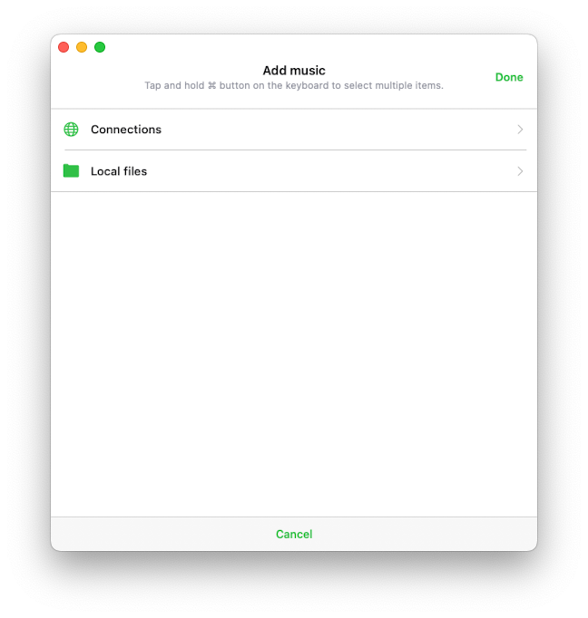
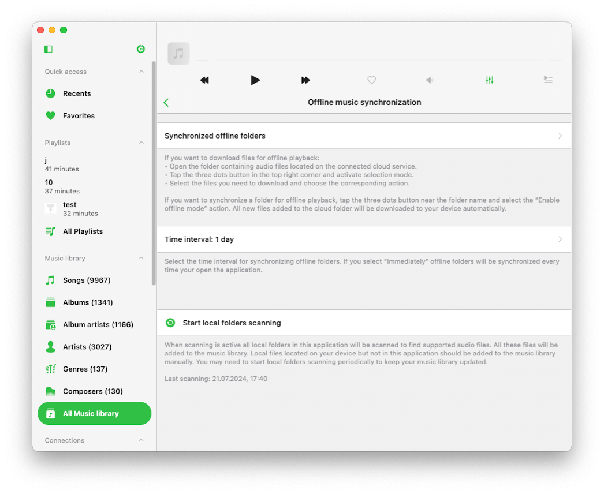
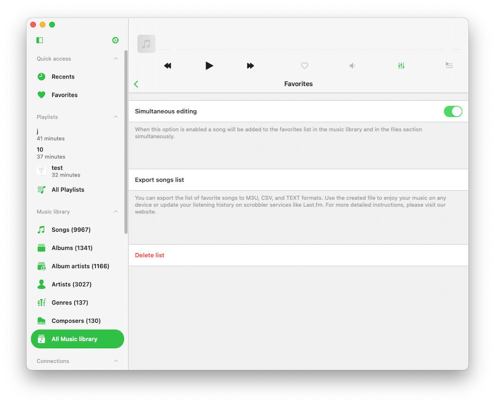
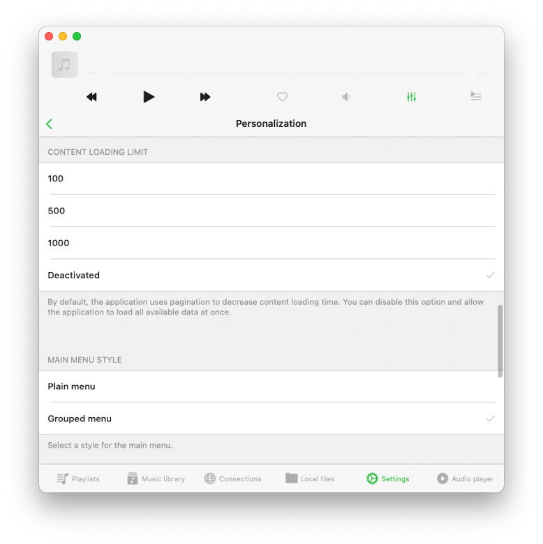
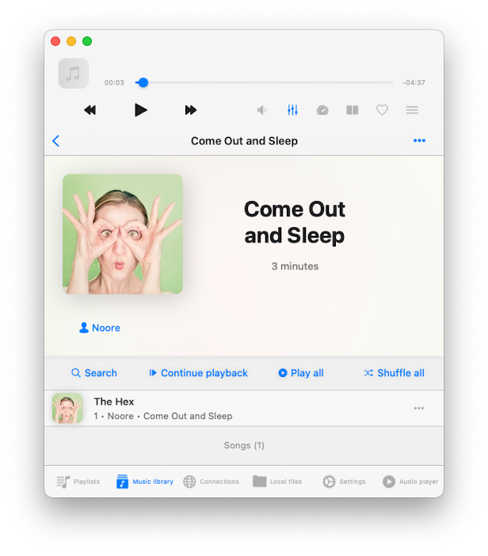

<div id="content-wrapper"><div class="ZL4A4N" data-hook="post-page"><div class=""><div class="" data-hook="slot-placeholder-TPAMultiSection_jvugchim.above-content-1" id="TPAMultiSection_jvugchim.above-content-1"></div></div><div class=""><div class="" data-hook="slot-placeholder-TPAMultiSection_jvugchim.above-content-2" id="TPAMultiSection_jvugchim.above-content-2"></div></div><div class="HcBlwg"><div class="zp8IQu"><div><div class="EcwjNF"><article class="tgMH9T" data-hook="post"><section class="UYw9XC" data-hook="post-hero-image"></section><div class="HW6ttf"><header class="PhCafd"><div class="PKQ95p"><div class="MbPQSQ"><div class="apmiGT" data-hook="post-title"><h1 class="H3vOVf" data-hook="post-title">Evermusic Guide: Music Library</h1></div><div class="a5JqMF"><ul class="NtBDdE"><li class="MABqta"><div class="bZrSjY" style="width:32px;height:32px"><wow-image class="TI1b5D lR3yj5 fluid-avatar-image bok7Ik" data-bg-effect-name="" data-has-ssr-src="" data-image-info='{"displayMode":"fill","targetWidth":32,"targetHeight":32,"isSEOBot":false,"encoding":"AVIF","imageData":{"width":32,"height":32,"uri":"21260c_a693a1db9b5b41199827fb5e97aa89a1%7Emv2.png","name":"","displayMode":"fill"}}' data-motion-part="BG_IMG undefined" style="--wix-img-max-width:max(32px, 100%)"></wow-image></div><a class="IkAhjA" data-hook="profile-link" href="https://www.everappz.com/profile/serviceleshko/profile"><span data-hook="user-name">admin</span></a></li><li class="wBTynn"><span class="time-ago" data-hook="time-ago" title="Jan 1, 2020">Jan 1, 2020</span></li><li class="F56Ope"><span data-hook="time-to-read" title="10 min read">10 min read</span></li></ul><div class="hSZsuG"><button aria-label="More actions" aria-pressed="false" class="MHuRVq" data-hook="more-button" id="more-button-f53ae5b2-203e-4cdf-94f2-faf458bbed3f" type="button"><svg aria-hidden="true" viewbox="0 0 19 19" width="19" xmlns="http://www.w3.org/2000/svg"><path d="M2.44398805,5.99973295 C1.62345525,5.9690612 0.980075653,5.28418875 1.00047182,4.46312144 C1.02086799,3.64205413 1.69745853,2.98998831 2.51850166,3.0001164 C3.33954478,3.01024449 3.99985313,3.67880182 4,4.50012255 C3.98424812,5.34399206 3.28763905,6.0153508 2.44398805,5.99973295 L2.44398805,5.99973295 Z M2.44398805,10.9997329 C1.62345525,10.9690612 0.980075653,10.2841888 1.00047182,9.46312144 C1.02086799,8.64205413 1.69745853,7.98998831 2.51850166,8.0001164 C3.33954478,8.01024449 3.99985313,8.67880182 4,9.50012255 C3.98424812,10.3439921 3.28763905,11.0153508 2.44398805,10.9997329 L2.44398805,10.9997329 Z M2.44398805,15.9997329 C1.62345525,15.9690612 0.980075653,15.2841888 1.00047182,14.4631214 C1.02086799,13.6420541 1.69745853,12.9899883 2.51850166,13.0001164 C3.33954478,13.0102445 3.99985313,13.6788018 4,14.5001225 C3.98424812,15.3439921 3.28763905,16.0153508 2.44398805,15.9997329 L2.44398805,15.9997329 Z"></path></svg></button></div></div></div><p class="NfKpG_">Updated: <span class="time-ago" data-hook="time-ago" title="Dec 8, 2024">Dec 8, 2024</span></p></div></header><section class="VQDdIN" data-hook="post-description"><div class="moHCnT"><div class="moHCnT"><div class="fTEXDR" data-rce-version="10.134.2"><div class="_8HJdY" data-id="content-viewer" dir="ltr" style="--ricos-text-color:rgb(var(--textParagraphColor-rgb));--ricos-text-color-tuple:var(--textParagraphColor-rgb);--ricos-action-color:rgb(var(--postButtonBackgroundColor));--ricos-action-color-tuple:var(--postButtonBackgroundColor);--ricos-background-color:rgb(var(--postBackgroundColor));--ricos-background-color-tuple:var(--postBackgroundColor);--ricos-fallback-color:rgb(0, 0, 0);--ricos-fallback-color-tuple:0, 0, 0;--ricos-settings-action-color:rgb(0, 0, 0);--ricos-settings-action-color-tuple:0, 0, 0;--ricos-text-on-action-color:rgb(var(--postButtonTextColor));--ricos-text-on-action-color-tuple:var(--postButtonTextColor);--ricos-action-color-fallback:rgb(0, 0, 0);--ricos-action-color-fallback-tuple:0, 0, 0;--ricos-custom-p-font-weight:var(--textParagraphFont-weight);--ricos-custom-p-font-style:var(--textParagraphFont-style);--ricos-custom-p-line-height:max(calc(var(--textParagraphFont-size) * 1.5), var(--textParagraphFont-line-height));--ricos-custom-p-font-size:var(--textParagraphFont-size);--ricos-custom-p-font-family:var(--textParagraphFont-family);--ricos-custom-p-text-decoration:var(--textParagraphFont-text-decoration);--ricos-custom-p-color:rgb(var(--textParagraphColor));--ricos-custom-h1-font-weight:var(--textH1Font-weight);--ricos-custom-h1-font-style:var(--textH1Font-style);--ricos-custom-h1-line-height:var(--textH1Font-line-height);--ricos-custom-h1-font-size:var(--textH1Font-size);--ricos-custom-h1-font-family:var(--textH1Font-family);--ricos-custom-h1-text-decoration:var(--textH1Font-text-decoration);--ricos-custom-h1-color:rgb(var(--textH1Color));--ricos-custom-h2-font-weight:var(--textH2Font-weight);--ricos-custom-h2-font-style:var(--textH2Font-style);--ricos-custom-h2-line-height:var(--textH2Font-line-height);--ricos-custom-h2-font-size:var(--textH2Font-size);--ricos-custom-h2-font-family:var(--textH2Font-family);--ricos-custom-h2-text-decoration:var(--textH2Font-text-decoration);--ricos-custom-h2-color:rgb(var(--textH2Color));--ricos-custom-h3-font-weight:var(--textH3Font-weight);--ricos-custom-h3-font-style:var(--textH3Font-style);--ricos-custom-h3-line-height:var(--textH3Font-line-height);--ricos-custom-h3-font-size:var(--textH3Font-size);--ricos-custom-h3-font-family:var(--textH3Font-family);--ricos-custom-h3-text-decoration:var(--textH3Font-text-decoration);--ricos-custom-h3-color:rgb(var(--textH3Color));--ricos-custom-h4-font-weight:var(--textH4Font-weight);--ricos-custom-h4-font-style:var(--textH4Font-style);--ricos-custom-h4-line-height:var(--textH4Font-line-height);--ricos-custom-h4-font-size:var(--textH4Font-size);--ricos-custom-h4-font-family:var(--textH4Font-family);--ricos-custom-h4-text-decoration:var(--textH4Font-text-decoration);--ricos-custom-h4-color:rgb(var(--textH4Color));--ricos-custom-h5-font-weight:var(--textH5Font-weight);--ricos-custom-h5-font-style:var(--textH5Font-style);--ricos-custom-h5-line-height:var(--textH5Font-line-height);--ricos-custom-h5-font-size:var(--textH5Font-size);--ricos-custom-h5-font-family:var(--textH5Font-family);--ricos-custom-h5-text-decoration:var(--textH5Font-text-decoration);--ricos-custom-h5-color:rgb(var(--textH5Color));--ricos-custom-h6-font-weight:var(--textH6Font-weight);--ricos-custom-h6-font-style:var(--textH6Font-style);--ricos-custom-h6-line-height:var(--textH6Font-line-height);--ricos-custom-h6-font-size:var(--textH6Font-size);--ricos-custom-h6-font-family:var(--textH6Font-family);--ricos-custom-h6-text-decoration:var(--textH6Font-text-decoration);--ricos-custom-h6-color:rgb(var(--textH6Color));--ricos-custom-quote-line-height:var(--textQuoteFont-line-height);--ricos-custom-quote-font-size:var(--textQuoteFont-size);--ricos-custom-quote-font-style:var(--textQuoteFont-style);--ricos-custom-quote-font-family:var(--textQuoteFont-family);--ricos-custom-quote-font-weight:var(--textQuoteFont-weight);--ricos-custom-quote-text-decoration:var(--textQuoteFont-text-decoration);--ricos-custom-quote-color:rgb(var(--textQuoteColor));--ricos-custom-quote-border-color:rgb(var(--textLinksAndHashtagsColor));--ricos-custom-quote-margin-inline-start:var(--ricosQuoteMarginInlineStart);--ricos-custom-code-block-line-height:1.5;--ricos-custom-link-font-style:inherit;--ricos-custom-link-font-weight:inherit;--ricos-custom-link-text-decoration:inherit;--ricos-custom-link-color:rgb(var(--textLinksAndHashtagsColor));--ricos-custom-hashtag-font-style:inherit;--ricos-custom-hashtag-font-weight:inherit;--ricos-custom-hashtag-text-decoration:inherit;--ricos-custom-hashtag-color:rgb(var(--textLinksAndHashtagsColor));--ricos-custom-footer-toolbar-padding-inline-start:var(--ricosFooterPadding);--ricos-custom-footer-toolbar-padding-inline-end:var(--ricosFooterPadding);--ricos-custom-editor-add-plugin-button-position-inline-start:var(--ricosAddPluginButtonStart);--ricos-breakout-normal-padding-start:var(--ricosNormalPadding);--ricos-breakout-normal-padding-end:var(--ricosNormalPadding);--ricos-breakout-full-width-padding-start:var(--ricosFullWidthPadding);--ricos-breakout-full-width-padding-end:var(--ricosFullWidthPadding)"><div class="WZmlO"><div data-hook="rcv-block-first" type="first"></div><div class="Qvle0"><div data-breakout="normal"><p class="_04qQG jtShe _6XZJW UGHSE" dir="auto" id="viewer-foo" style="padding-top:0px;padding-bottom:0px;line-height:max(0.8em, 2em)"><span class="mVzZr"><span style="font-size:16px"><span>Managing your music library is a breeze with Evermusic, where you can effortlessly organize all your tracks. You have two options for building your music library: manual addition or automatic synchronization.</span></span></span></p></div><div data-hook="rcv-block1" type="paragraph"></div><div data-breakout="normal"><div class="_04qQG jtShe _6XZJW UGHSE" dir="auto" id="viewer-7k4jc" style="padding-top:0px;padding-bottom:0px;line-height:max(0.8em, 2em)"><span class="mVzZr"><br role="presentation"/></span></div></div><div data-hook="rcv-block2" type="empty-line"></div><div data-breakout="normal"><p class="_04qQG jtShe _6XZJW UGHSE" dir="auto" id="viewer-80ssn" style="padding-top:0px;padding-bottom:0px;line-height:max(0.8em, 2em)"><span class="mVzZr"><strong style="font-weight:700"><span style="font-size:16px"><span>Manual Addition</span></span></strong><span style="font-size:16px"><span>: To manually add tracks, tap on the "Add music" menu item and select folders/files from your connected cloud services or files located on your device. When you add tracks to the library, only links to those tracks are created, preserving the actual files in their original locations to save valuable disk space. If you want to make tracks available offline, you can use the download action from the options menu or enable offline mode for playlists and track collections.</span></span></span></p></div><div data-hook="rcv-block3" type="paragraph"></div><div data-breakout="normal"><div class="_42tfF" id="viewer-4epdc"><div class="_16CGD abqz1"><figure class="Z--PZ" data-hook="figure-IMAGE"><div class="_8c85B" data-hook="image-viewer"><div class="zPKNC uh6iL eO1yr" data-hook="image-viewer-4epdc" id="4epdc" style="--dim-height:682;--dim-width:648;--ricos-image-default-border-color:unset"><wow-image class="undefined P6NQu" data-animate-blur="" data-bg-effect-name="" data-has-ssr-src="" data-image-info='{"containerId":"4epdc","displayMode":"fill","isLQIP":true,"isSEOBot":false,"lqipTransition":"blur","encoding":"AVIF","imageData":{"width":648,"height":682,"uri":"21260c_c716bca4d7304a1fb98f94b57f362950~mv2.png","name":"","displayMode":"fill"}}' data-motion-part="BG_IMG" data-transitioned="" id="21260c_c716bca4d7304a1fb98f94b57f362950~mv2.png"></wow-image></div><button aria-label="Expand image" class="vB0h2" data-hook="image-expand-button" type="button"><svg class="vx8ar" viewbox="0 0 19 19" xmlns="http://www.w3.org/2000/svg"><path d="M15.071 8.371V4.585l-4.355 4.356a.2.2 0 0 1-.283 0l-.374-.374a.2.2 0 0 1 0-.283l4.356-4.355h-3.786a.2.2 0 0 1-.2-.2V3.2c0-.11.09-.2.2-.2H16v5.371a.2.2 0 0 1-.2.2h-.529a.2.2 0 0 1-.2-.2zm-6.5 6.9v.529a.2.2 0 0 1-.2.2H3v-5.371c0-.11.09-.2.2-.2h.529c.11 0 .2.09.2.2v3.786l4.355-4.356a.2.2 0 0 1 .283 0l.374.374a.2.2 0 0 1 0 .283L4.585 15.07h3.786c.11 0 .2.09.2.2z" fill="#000" fill-rule="nonzero"></path></svg></button></div></figure></div></div></div><div data-hook="rcv-block4" type="image"></div><div data-breakout="normal"><p class="_04qQG jtShe _6XZJW UGHSE" dir="auto" id="viewer-ecs0r" style="padding-top:0px;padding-bottom:0px;line-height:max(0.8em, 2em)"><span class="mVzZr"><strong style="font-weight:700"><span style="font-size:16px"><span>Quick Access: </span></span></strong><span style="font-size:16px"><span>at the top of the music library menu, you'll find a quick access section providing convenient links to your favorites, recents, and audio bookmarks:</span></span></span></p></div><div data-hook="rcv-block5" type="paragraph"></div><div data-breakout="normal"><p class="_04qQG jtShe _6XZJW UGHSE" dir="auto" id="viewer-b69ng" style="padding-top:0px;padding-bottom:0px;line-height:max(0.8em, 2em)"><span class="mVzZr"><strong style="font-weight:700"><span style="font-size:16px"><span>Favorites</span></span></strong><span style="font-size:16px"><span>: You can mark songs as favorites on the audio player screen or using the options menu.</span></span></span></p></div><div data-hook="rcv-block6" type="paragraph"></div><div data-breakout="normal"><p class="_04qQG jtShe _6XZJW UGHSE" dir="auto" id="viewer-3cr4q" style="padding-top:0px;padding-bottom:0px;line-height:max(0.8em, 2em)"><span class="mVzZr"><strong style="font-weight:700"><span style="font-size:16px"><span>Recents</span></span></strong><span style="font-size:16px"><span>: This section displays all recently played tracks.</span></span></span></p></div><div data-hook="rcv-block7" type="paragraph"></div><div data-breakout="normal"><p class="_04qQG jtShe _6XZJW UGHSE" dir="auto" id="viewer-bicba" style="padding-top:0px;padding-bottom:0px;line-height:max(0.8em, 2em)"><span class="mVzZr"><strong style="font-weight:700"><span style="font-size:16px"><span>Bookmarks</span></span></strong><span style="font-size:16px"><span>: You can create audio bookmarks while a song is playing and manage them on this screen. Detailed instructions on working with audio bookmarks can be found </span></span><span style="font-size:16px"><u style="text-decoration:underline"><span>here</span></u></span><span style="font-size:16px"><span>.</span></span></span></p></div><div data-hook="rcv-block8" type="paragraph"></div><div data-breakout="normal"><div class="_42tfF" id="viewer-1d0eg"><div class="_16CGD abqz1"><figure class="Z--PZ" data-hook="figure-IMAGE"><div class="_8c85B" data-hook="image-viewer"><div class="zPKNC uh6iL eO1yr" data-hook="image-viewer-1d0eg" id="1d0eg" style="--dim-height:987;--dim-width:1116;--ricos-image-default-border-color:unset"><wow-image class="undefined P6NQu" data-animate-blur="" data-bg-effect-name="" data-has-ssr-src="" data-image-info='{"containerId":"1d0eg","displayMode":"fill","isLQIP":true,"isSEOBot":false,"lqipTransition":"blur","encoding":"AVIF","imageData":{"width":1116,"height":987,"uri":"21260c_324233656df74f219cd303f3bea91228~mv2.png","name":"","displayMode":"fill"}}' data-motion-part="BG_IMG" data-transitioned="" id="21260c_324233656df74f219cd303f3bea91228~mv2.png"></wow-image></div><button aria-label="Expand image" class="vB0h2" data-hook="image-expand-button" type="button"><svg class="vx8ar" viewbox="0 0 19 19" xmlns="http://www.w3.org/2000/svg"><path d="M15.071 8.371V4.585l-4.355 4.356a.2.2 0 0 1-.283 0l-.374-.374a.2.2 0 0 1 0-.283l4.356-4.355h-3.786a.2.2 0 0 1-.2-.2V3.2c0-.11.09-.2.2-.2H16v5.371a.2.2 0 0 1-.2.2h-.529a.2.2 0 0 1-.2-.2zm-6.5 6.9v.529a.2.2 0 0 1-.2.2H3v-5.371c0-.11.09-.2.2-.2h.529c.11 0 .2.09.2.2v3.786l4.355-4.356a.2.2 0 0 1 .283 0l.374.374a.2.2 0 0 1 0 .283L4.585 15.07h3.786c.11 0 .2.09.2.2z" fill="#000" fill-rule="nonzero"></path></svg></button></div></figure></div></div></div><div data-hook="rcv-block9" type="image"></div><div data-breakout="normal"><div class="_04qQG jtShe _6XZJW UGHSE" dir="auto" id="viewer-bljum" style="padding-top:0px;padding-bottom:0px;line-height:max(0.8em, 2em)"><span class="mVzZr"><br role="presentation"/></span></div></div><div data-hook="rcv-block10" type="empty-line"></div><div data-breakout="normal"><p class="_04qQG jtShe _6XZJW UGHSE" dir="auto" id="viewer-5g6ss" style="padding-top:0px;padding-bottom:0px;line-height:max(0.8em, 2em)"><span class="mVzZr"><strong style="font-weight:700"><span style="font-size:16px"><span>Continue Playback:</span></span></strong><span style="font-size:16px"><span> restore the audio player queue from the last saved position if this feature is enabled in application settings.</span></span></span></p></div><div data-hook="rcv-block11" type="paragraph"></div><div data-breakout="normal"><div class="_04qQG jtShe _6XZJW UGHSE" dir="auto" id="viewer-d4bq0" style="padding-top:0px;padding-bottom:0px;line-height:max(0.8em, 2em)"><span class="mVzZr"><br role="presentation"/></span></div></div><div data-hook="rcv-block12" type="empty-line"></div><div data-breakout="normal"><p class="_04qQG jtShe _6XZJW UGHSE" dir="auto" id="viewer-6gunl" style="padding-top:0px;padding-bottom:0px;line-height:max(0.8em, 2em)"><span class="mVzZr"><span style="font-size:16px"><span>All the tracks in your library are thoughtfully grouped by source types and music tags:</span></span></span></p></div><div data-hook="rcv-block13" type="paragraph"></div><div data-breakout="normal"><p class="_04qQG jtShe _6XZJW UGHSE" dir="auto" id="viewer-cvhn7" style="padding-top:0px;padding-bottom:0px;line-height:max(0.8em, 2em)"><span class="mVzZr"><strong style="font-weight:700"><span style="font-size:16px"><span>Online music</span></span></strong><span style="font-size:16px"><span>: This section showcases music from your cloud services.</span></span></span></p></div><div data-hook="rcv-block14" type="paragraph"></div><div data-breakout="normal"><p class="_04qQG jtShe _6XZJW UGHSE" dir="auto" id="viewer-2uc1d" style="padding-top:0px;padding-bottom:0px;line-height:max(0.8em, 2em)"><span class="mVzZr"><strong style="font-weight:700"><span style="font-size:16px"><span>Offline music</span></span></strong><span style="font-size:16px"><span>: You can find music here for offline playback, sourced from your local files. This includes files in the app’s documents directory and other local files on your device added through the ‘Open files…’ system dialog.</span></span></span></p></div><div data-hook="rcv-block15" type="paragraph"></div><div data-breakout="normal"><p class="_04qQG jtShe _6XZJW UGHSE" dir="auto" id="viewer-1l08r" style="padding-top:0px;padding-bottom:0px;line-height:max(0.8em, 2em)"><span class="mVzZr"><strong style="font-weight:700"><span style="font-size:16px"><span>Music on this iPhone/iPad/Mac</span></span></strong><span style="font-size:16px"><span>: This category includes music imported into the application from your device.</span></span></span></p></div><div data-hook="rcv-block16" type="paragraph"></div><div data-breakout="normal"><p class="_04qQG jtShe _6XZJW UGHSE" dir="auto" id="viewer-26p8j" style="padding-top:0px;padding-bottom:0px;line-height:max(0.8em, 2em)"><span class="mVzZr"><strong style="font-weight:700"><span style="font-size:16px"><span>iTunes music</span></span></strong><span style="font-size:16px"><span>: This section shows music imported into your device's iPod library. Please note that tracks from Apple Music are not available here.</span></span></span></p></div><div data-hook="rcv-block17" type="paragraph"></div><div data-breakout="normal"><p class="_04qQG jtShe _6XZJW UGHSE" dir="auto" id="viewer-7eagv" style="padding-top:0px;padding-bottom:0px;line-height:max(0.8em, 2em)"><span class="mVzZr"><strong style="font-weight:700"><span style="font-size:16px"><span>Songs</span></span></strong><span style="font-size:16px"><span>, </span></span><strong style="font-weight:700"><span style="font-size:16px"><span>Albums</span></span></strong><span style="font-size:16px"><span>, </span></span><strong style="font-weight:700"><span style="font-size:16px"><span>Artists</span></span></strong><span style="font-size:16px"><span>, </span></span><strong style="font-weight:700"><span style="font-size:16px"><span>Genres</span></span></strong><span style="font-size:16px"><span>, </span></span><strong style="font-weight:700"><span style="font-size:16px"><span>Composers</span></span></strong><span style="font-size:16px"><span>: These categories organize your tracks by music tags.</span></span></span></p></div><div data-hook="rcv-block18" type="paragraph"></div><div data-breakout="normal"><p class="_04qQG jtShe _6XZJW UGHSE" dir="auto" id="viewer-540l3" style="padding-top:0px;padding-bottom:0px;line-height:max(0.8em, 2em)"><span class="mVzZr"><strong style="font-weight:700"><span style="font-size:16px"><span>Search</span></span></strong><span style="font-size:16px"><span>: You can use this feature to quickly find any song, artist, album, or genre in your music library.</span></span></span></p></div><div data-hook="rcv-block19" type="paragraph"></div><div data-breakout="normal"><div class="_04qQG jtShe _6XZJW UGHSE" dir="auto" id="viewer-bu6m" style="padding-top:0px;padding-bottom:0px;line-height:max(0.8em, 2em)"><span class="mVzZr"><br role="presentation"/></span></div></div><div data-hook="rcv-block20" type="empty-line"></div><div data-breakout="normal"><p class="_04qQG jtShe _6XZJW UGHSE" dir="auto" id="viewer-d1prt" style="padding-top:0px;padding-bottom:0px;line-height:max(0.8em, 2em)"><span class="mVzZr"><strong style="font-weight:700"><span style="font-size:16px"><span>Music Library Settings: </span></span></strong><span style="font-size:16px"><span>tap the three dots button to activate the more actions menu, where the "Settings" option allows you to configure music library settings.</span></span></span></p></div><div data-hook="rcv-block21" type="paragraph"></div><div data-breakout="normal"><div class="_42tfF" id="viewer-at1ai"><div class="_16CGD abqz1"><figure class="Z--PZ" data-hook="figure-IMAGE"><div class="_8c85B" data-hook="image-viewer"><div class="zPKNC uh6iL eO1yr" data-hook="image-viewer-at1ai" id="at1ai" style="--dim-height:880;--dim-width:1006;--ricos-image-default-border-color:unset"><wow-image class="undefined P6NQu" data-animate-blur="" data-bg-effect-name="" data-has-ssr-src="" data-image-info='{"containerId":"at1ai","displayMode":"fill","isLQIP":true,"isSEOBot":false,"lqipTransition":"blur","encoding":"AVIF","imageData":{"width":1006,"height":880,"uri":"21260c_32a25b477f5249909a7b4e33047144f5~mv2.png","name":"","displayMode":"fill"}}' data-motion-part="BG_IMG" data-transitioned="" id="21260c_32a25b477f5249909a7b4e33047144f5~mv2.png"></wow-image></div><button aria-label="Expand image" class="vB0h2" data-hook="image-expand-button" type="button"><svg class="vx8ar" viewbox="0 0 19 19" xmlns="http://www.w3.org/2000/svg"><path d="M15.071 8.371V4.585l-4.355 4.356a.2.2 0 0 1-.283 0l-.374-.374a.2.2 0 0 1 0-.283l4.356-4.355h-3.786a.2.2 0 0 1-.2-.2V3.2c0-.11.09-.2.2-.2H16v5.371a.2.2 0 0 1-.2.2h-.529a.2.2 0 0 1-.2-.2zm-6.5 6.9v.529a.2.2 0 0 1-.2.2H3v-5.371c0-.11.09-.2.2-.2h.529c.11 0 .2.09.2.2v3.786l4.355-4.356a.2.2 0 0 1 .283 0l.374.374a.2.2 0 0 1 0 .283L4.585 15.07h3.786c.11 0 .2.09.2.2z" fill="#000" fill-rule="nonzero"></path></svg></button></div></figure></div></div></div><div data-hook="rcv-block22" type="image"></div><div data-breakout="normal"><p class="_04qQG jtShe _6XZJW UGHSE" dir="auto" id="viewer-a7vd2" style="padding-top:0px;padding-bottom:0px;line-height:max(0.8em, 2em)"><span class="mVzZr"><strong style="font-weight:700"><span style="font-size:16px"><span>Metadata Reading</span></span></strong><span style="font-size:16px"><span>: When you add tracks to the library, the metadata reader gets to work. This background process reads all metadata from your tracks and organizes them by Artist, Album, Genre, and Composer. You have the flexibility to adjust the speed of metadata reading to load data faster, but be aware that this may use more energy. You can also disable the metadata reader and display file names instead of tag information. </span></span></span></p></div><div data-hook="rcv-block23" type="paragraph"></div><div data-breakout="normal"><div class="_42tfF" id="viewer-5htg4"><div class="_16CGD abqz1"><figure class="Z--PZ" data-hook="figure-IMAGE"><div class="_8c85B" data-hook="image-viewer"><div class="zPKNC uh6iL eO1yr" data-hook="image-viewer-5htg4" id="5htg4" style="--dim-height:987;--dim-width:1116;--ricos-image-default-border-color:unset"><wow-image class="undefined P6NQu" data-animate-blur="" data-bg-effect-name="" data-has-ssr-src="" data-image-info='{"containerId":"5htg4","displayMode":"fill","isLQIP":true,"isSEOBot":false,"lqipTransition":"blur","encoding":"AVIF","imageData":{"width":1116,"height":987,"uri":"21260c_9d22c93f1e574ffc9e2b9f189fedac62~mv2.png","name":"","displayMode":"fill"}}' data-motion-part="BG_IMG" id="21260c_9d22c93f1e574ffc9e2b9f189fedac62~mv2.png"></wow-image></div><button aria-label="Expand image" class="vB0h2" data-hook="image-expand-button" type="button"><svg class="vx8ar" viewbox="0 0 19 19" xmlns="http://www.w3.org/2000/svg"><path d="M15.071 8.371V4.585l-4.355 4.356a.2.2 0 0 1-.283 0l-.374-.374a.2.2 0 0 1 0-.283l4.356-4.355h-3.786a.2.2 0 0 1-.2-.2V3.2c0-.11.09-.2.2-.2H16v5.371a.2.2 0 0 1-.2.2h-.529a.2.2 0 0 1-.2-.2zm-6.5 6.9v.529a.2.2 0 0 1-.2.2H3v-5.371c0-.11.09-.2.2-.2h.529c.11 0 .2.09.2.2v3.786l4.355-4.356a.2.2 0 0 1 .283 0l.374.374a.2.2 0 0 1 0 .283L4.585 15.07h3.786c.11 0 .2.09.2.2z" fill="#000" fill-rule="nonzero"></path></svg></button></div></figure></div></div></div><div data-hook="rcv-block24" type="image"></div><div data-breakout="normal"><p class="_04qQG jtShe _6XZJW UGHSE" dir="auto" id="viewer-8a5l3" style="padding-top:0px;padding-bottom:0px;line-height:max(0.8em, 2em)"><span class="mVzZr"><strong style="font-weight:700"><span style="font-size:16px"><span>Importantly</span></span></strong><span style="font-size:16px"><span>, the metadata reader only updates metadata in your music library and does not alter the files stored in your cloud account or local storage. If you wish to edit metadata for audio files, you can do so using the built-in tags editor, which you can activate from the corresponding action in the options menu. </span></span></span></p></div><div data-hook="rcv-block25" type="paragraph"></div><div data-breakout="normal"><div class="_04qQG jtShe _6XZJW UGHSE" dir="auto" id="viewer-db0p" style="padding-top:0px;padding-bottom:0px;line-height:max(0.8em, 2em)"><span class="mVzZr"><br role="presentation"/></span></div></div><div data-hook="rcv-block26" type="empty-line"></div><div data-breakout="normal"><p class="_04qQG jtShe _6XZJW UGHSE" dir="auto" id="viewer-4olve3501" style="padding-top:0px;padding-bottom:0px;line-height:max(0.8em, 2em)"><span class="mVzZr"><strong style="font-weight:700"><span style="font-size:16px"><span>Available Modes for Metadata Reader:</span></span></strong></span></p></div><div data-hook="rcv-block27" type="paragraph"></div><div data-breakout="normal"><p class="_04qQG jtShe _6XZJW UGHSE" dir="auto" id="viewer-0qsq4260262" style="padding-top:0px;padding-bottom:0px;line-height:max(0.8em, 2em)"><span class="mVzZr"><strong style="font-weight:700"><span style="font-size:16px"><span>Deactivated</span></span></strong><span style="font-size:16px"><span>: The metadata reader will be deactivated, and file names will be shown instead of data from audio tags.</span></span></span></p></div><div data-hook="rcv-block28" type="paragraph"></div><div data-breakout="normal"><p class="_04qQG jtShe _6XZJW UGHSE" dir="auto" id="viewer-ckf5z455478" style="padding-top:0px;padding-bottom:0px;line-height:max(0.8em, 2em)"><span class="mVzZr"><strong style="font-weight:700"><span style="font-size:16px"><span>Current Song</span></span></strong><span style="font-size:16px"><span>: The application will read metadata only for the currently playing song. Use this option if you have a slow network connection to prevent the metadata reader from sending many requests to the cloud server, which may cause playback interruptions.</span></span></span></p></div><div data-hook="rcv-block29" type="paragraph"></div><div data-breakout="normal"><p class="_04qQG jtShe _6XZJW UGHSE" dir="auto" id="viewer-buzwp260270" style="padding-top:0px;padding-bottom:0px;line-height:max(0.8em, 2em)"><span class="mVzZr"><strong style="font-weight:700"><span style="font-size:16px"><span>Audio Player Queue</span></span></strong><span style="font-size:16px"><span>: The app will read metadata for all songs in the audio player queue.</span></span></span></p></div><div data-hook="rcv-block30" type="paragraph"></div><div data-breakout="normal"><p class="_04qQG jtShe _6XZJW UGHSE" dir="auto" id="viewer-yflvf260274" style="padding-top:0px;padding-bottom:0px;line-height:max(0.8em, 2em)"><span class="mVzZr"><strong style="font-weight:700"><span style="font-size:16px"><span>Music Library</span></span></strong><span style="font-size:16px"><span>: The app will read metadata for all songs in the music library.</span></span></span></p></div><div data-hook="rcv-block31" type="paragraph"></div><div data-breakout="normal"><div class="_04qQG jtShe _6XZJW UGHSE" dir="auto" id="viewer-s20wy3295" style="padding-top:0px;padding-bottom:0px;line-height:max(0.8em, 2em)"><span class="mVzZr"><br role="presentation"/></span></div></div><div data-hook="rcv-block32" type="empty-line"></div><div data-breakout="normal"><p class="_04qQG jtShe _6XZJW UGHSE" dir="auto" id="viewer-cso03" style="padding-top:0px;padding-bottom:0px;line-height:max(0.8em, 2em)"><span class="mVzZr"><span style="font-size:16px"><span>When the </span></span><strong style="font-weight:700"><span style="font-size:16px"><span>'Metadata reading in the background'</span></span></strong><span style="font-size:16px"><span> switch is on, the metadata reader works in background mode. However, please note that if the app consumes a lot of energy during audio playback, the iOS operating system may suspend it.</span></span></span></p></div><div data-hook="rcv-block33" type="paragraph"></div><div data-breakout="normal"><div class="_04qQG jtShe _6XZJW UGHSE" dir="auto" id="viewer-fuuof" style="padding-top:0px;padding-bottom:0px;line-height:max(0.8em, 2em)"><span class="mVzZr"><br role="presentation"/></span></div></div><div data-hook="rcv-block34" type="empty-line"></div><div data-breakout="normal"><p class="_04qQG jtShe _6XZJW UGHSE" dir="auto" id="viewer-5ei7g" style="padding-top:0px;padding-bottom:0px;line-height:max(0.8em, 2em)"><span class="mVzZr"><span style="font-size:16px"><span>So, if you have a large music collection, it's advisable to use the desktop version of the application for metadata synchronization. You can then use the data backup and restore feature to transfer the synchronized music library from the desktop, which is available in app settings.</span></span></span></p></div><div data-hook="rcv-block35" type="paragraph"></div><div data-breakout="normal"><div class="_04qQG jtShe _6XZJW UGHSE" dir="auto" id="viewer-1kq1738559" style="padding-top:0px;padding-bottom:0px;line-height:max(0.8em, 2em)"><span class="mVzZr"><br role="presentation"/></span></div></div><div data-hook="rcv-block36" type="empty-line"></div><div data-breakout="normal"><p class="_04qQG jtShe _6XZJW UGHSE" dir="auto" id="viewer-knycw38691" style="padding-top:0px;padding-bottom:0px;line-height:max(0.8em, 2em)"><span class="mVzZr"><span style="font-size:16px"><span>When the</span></span><strong style="font-weight:700"><span style="font-size:16px"><span> 'Normalize metadata encoding'</span></span></strong><span style="font-size:16px"><span> is enabled, the app will automatically normalize metadata encoding for all songs in the music library. This fixes issues where audio tags’ encoding is broken (such as after editing files on a Windows PC) and prevents incorrect information from displaying while a track is playing or added to the library.</span></span></span></p></div><div data-hook="rcv-block37" type="paragraph"></div><div data-breakout="normal"><div class="_04qQG jtShe _6XZJW UGHSE" dir="auto" id="viewer-ztxn638163" style="padding-top:0px;padding-bottom:0px;line-height:max(0.8em, 2em)"><span class="mVzZr"><br role="presentation"/></span></div></div><div data-hook="rcv-block38" type="empty-line"></div><div data-breakout="normal"><p class="_04qQG jtShe _6XZJW UGHSE" dir="auto" id="viewer-rvkhn38295" style="padding-top:0px;padding-bottom:0px;line-height:max(0.8em, 2em)"><span class="mVzZr"><span style="font-size:16px"><span> </span></span><span style="font-size:16px"><span style="color:#374151;text-decoration:inherit"><span>The</span></span></span><strong style="font-weight:700"><span style="font-size:16px"><span style="color:#374151;text-decoration:inherit"><span> 'Reload metadata'</span></span></span></strong><span style="font-size:16px"><span style="color:#374151;text-decoration:inherit"><span> action will flag all files in your music library as having missing metadata, triggering the metadata reader to refresh the metadata for every file in your music library.</span></span></span></span></p></div><div data-hook="rcv-block39" type="paragraph"></div><div data-breakout="normal"><div class="_04qQG jtShe _6XZJW UGHSE" dir="auto" id="viewer-7xob344502" style="padding-top:0px;padding-bottom:0px;line-height:max(0.8em, 2em)"><span class="mVzZr"><br role="presentation"/></span></div></div><div data-hook="rcv-block40" type="empty-line"></div><div data-breakout="normal"><p class="_04qQG jtShe _6XZJW UGHSE" dir="auto" id="viewer-ngx3q44635" style="padding-top:0px;padding-bottom:0px;line-height:max(0.8em, 2em)"><span class="mVzZr"><span style="font-size:16px"><span style="background-color:var(--ricos-custom-p-background-color,unset);text-decoration:inherit"><span>Tap the '</span></span></span><strong style="font-weight:700"><span style="font-size:16px"><span>Start Metadata Reading</span></span></strong><span style="font-size:16px"><span style="background-color:var(--ricos-custom-p-background-color,unset);text-decoration:inherit"><span>' action to start the metadata reader. The operation progress will be displayed below.</span></span></span></span></p></div><div data-hook="rcv-block41" type="paragraph"></div><div data-breakout="normal"><div class="_04qQG jtShe _6XZJW UGHSE" dir="auto" id="viewer-s9nbg38429" style="padding-top:0px;padding-bottom:0px;line-height:max(0.8em, 2em)"><span class="mVzZr"><br role="presentation"/></span></div></div><div data-hook="rcv-block42" type="empty-line"></div><div data-breakout="normal"><p class="_04qQG jtShe _6XZJW UGHSE" dir="auto" id="viewer-cdib3" style="padding-top:0px;padding-bottom:0px;line-height:max(0.8em, 2em)"><span class="mVzZr"><strong style="font-weight:700"><span style="font-size:16px"><span>Online Music Synchronization</span></span></strong><span style="font-size:16px"><span>: Automatic online music sync allows you to add tracks from connected cloud services to the music library automatically. To activate this feature, head to music library settings and select sync folders. </span></span></span></p></div><div data-hook="rcv-block43" type="paragraph"></div><div data-breakout="normal"><div class="_42tfF" id="viewer-80dqn"><div class="_16CGD abqz1"><figure class="Z--PZ" data-hook="figure-IMAGE"><div class="_8c85B" data-hook="image-viewer"><div class="zPKNC uh6iL eO1yr" data-hook="image-viewer-80dqn" id="80dqn" style="--dim-height:948;--dim-width:1027;--ricos-image-default-border-color:unset"><wow-image class="undefined P6NQu" data-animate-blur="" data-bg-effect-name="" data-has-ssr-src="" data-image-info='{"containerId":"80dqn","displayMode":"fill","isLQIP":true,"isSEOBot":false,"lqipTransition":"blur","encoding":"AVIF","imageData":{"width":1027,"height":948,"uri":"21260c_ac7c155c66ba48ca972c80f3c0d66950~mv2.png","name":"","displayMode":"fill"}}' data-motion-part="BG_IMG" id="21260c_ac7c155c66ba48ca972c80f3c0d66950~mv2.png"></wow-image></div><button aria-label="Expand image" class="vB0h2" data-hook="image-expand-button" type="button"><svg class="vx8ar" viewbox="0 0 19 19" xmlns="http://www.w3.org/2000/svg"><path d="M15.071 8.371V4.585l-4.355 4.356a.2.2 0 0 1-.283 0l-.374-.374a.2.2 0 0 1 0-.283l4.356-4.355h-3.786a.2.2 0 0 1-.2-.2V3.2c0-.11.09-.2.2-.2H16v5.371a.2.2 0 0 1-.2.2h-.529a.2.2 0 0 1-.2-.2zm-6.5 6.9v.529a.2.2 0 0 1-.2.2H3v-5.371c0-.11.09-.2.2-.2h.529c.11 0 .2.09.2.2v3.786l4.355-4.356a.2.2 0 0 1 .283 0l.374.374a.2.2 0 0 1 0 .283L4.585 15.07h3.786c.11 0 .2.09.2.2z" fill="#000" fill-rule="nonzero"></path></svg></button></div></figure></div></div></div><div data-hook="rcv-block44" type="image"></div><div data-breakout="normal"><p class="_04qQG jtShe _6XZJW UGHSE" dir="auto" id="viewer-994dg" style="padding-top:0px;padding-bottom:0px;line-height:max(0.8em, 2em)"><span class="mVzZr"><span style="font-size:16px"><span>With this option enabled, the application scans all selected folders, identifies supported audio files, and seamlessly integrates them into your library. You can start or stop synchronization by tapping on the corresponding menu action. </span></span></span></p></div><div data-hook="rcv-block45" type="paragraph"></div><div data-breakout="normal"><div class="_42tfF" id="viewer-8191c"><div class="_16CGD abqz1"><figure class="Z--PZ" data-hook="figure-IMAGE"><div class="_8c85B" data-hook="image-viewer"><div class="zPKNC uh6iL eO1yr" data-hook="image-viewer-8191c" id="8191c" style="--dim-height:856;--dim-width:1046;--ricos-image-default-border-color:unset"><wow-image class="undefined P6NQu" data-animate-blur="" data-bg-effect-name="" data-has-ssr-src="" data-image-info='{"containerId":"8191c","displayMode":"fill","isLQIP":true,"isSEOBot":false,"lqipTransition":"blur","encoding":"AVIF","imageData":{"width":1046,"height":856,"uri":"21260c_cd8c111c7ab640e5be6f15e775f7259c~mv2.png","name":"","displayMode":"fill"}}' data-motion-part="BG_IMG" id="21260c_cd8c111c7ab640e5be6f15e775f7259c~mv2.png"></wow-image></div><button aria-label="Expand image" class="vB0h2" data-hook="image-expand-button" type="button"><svg class="vx8ar" viewbox="0 0 19 19" xmlns="http://www.w3.org/2000/svg"><path d="M15.071 8.371V4.585l-4.355 4.356a.2.2 0 0 1-.283 0l-.374-.374a.2.2 0 0 1 0-.283l4.356-4.355h-3.786a.2.2 0 0 1-.2-.2V3.2c0-.11.09-.2.2-.2H16v5.371a.2.2 0 0 1-.2.2h-.529a.2.2 0 0 1-.2-.2zm-6.5 6.9v.529a.2.2 0 0 1-.2.2H3v-5.371c0-.11.09-.2.2-.2h.529c.11 0 .2.09.2.2v3.786l4.355-4.356a.2.2 0 0 1 .283 0l.374.374a.2.2 0 0 1 0 .283L4.585 15.07h3.786c.11 0 .2.09.2.2z" fill="#000" fill-rule="nonzero"></path></svg></button></div></figure></div></div></div><div data-hook="rcv-block46" type="image"></div><div data-breakout="normal"><p class="_04qQG jtShe _6XZJW UGHSE" dir="auto" id="viewer-6jp6b" style="padding-top:0px;padding-bottom:0px;line-height:max(0.8em, 2em)"><span class="mVzZr"><span style="font-size:16px"><span>Online music synchronization operates exclusively when the app is in the foreground, which means synchronization may take some time. To speed up the process, leave your app open, connect it to a power source, and enable 'Screen' -&gt; 'Always active' option in application settings. </span></span></span></p></div><div data-hook="rcv-block47" type="paragraph"></div><div data-breakout="normal"><div class="_04qQG jtShe _6XZJW UGHSE" dir="auto" id="viewer-bk32v" style="padding-top:0px;padding-bottom:0px;line-height:max(0.8em, 2em)"><span class="mVzZr"><br role="presentation"/></span></div></div><div data-hook="rcv-block48" type="empty-line"></div><div data-breakout="normal"><p class="_04qQG jtShe _6XZJW UGHSE" dir="auto" id="viewer-5s9u1" style="padding-top:0px;padding-bottom:0px;line-height:max(0.8em, 2em)"><span class="mVzZr"><span style="font-size:16px"><span>Alternatively, you can perform online music synchronization on the desktop version of the app and transfer the music library to the iOS version using the data backup restore feature. </span></span></span></p></div><div data-hook="rcv-block49" type="paragraph"></div><div data-breakout="normal"><div class="_04qQG jtShe _6XZJW UGHSE" dir="auto" id="viewer-wh46e52529" style="padding-top:0px;padding-bottom:0px;line-height:max(0.8em, 2em)"><span class="mVzZr"><br role="presentation"/></span></div></div><div data-hook="rcv-block50" type="empty-line"></div><div data-breakout="normal"><p class="_04qQG jtShe _6XZJW UGHSE" dir="auto" id="viewer-z6zsp52673" style="padding-top:0px;padding-bottom:0px;line-height:max(0.8em, 2em)"><span class="mVzZr"><span style="font-size:16px"><span>You can also set how often you want to synchronize your online music library. If you set it to "immediately," online sync will start every time you open the application.</span></span></span></p></div><div data-hook="rcv-block51" type="paragraph"></div><div data-breakout="normal"><div class="_42tfF" id="viewer-5g7fl"><div class="_16CGD abqz1"><figure class="Z--PZ" data-hook="figure-IMAGE"><div class="_8c85B" data-hook="image-viewer"><div class="zPKNC uh6iL eO1yr" data-hook="image-viewer-5g7fl" id="5g7fl" style="--dim-height:682;--dim-width:562;--ricos-image-default-border-color:unset"><wow-image class="undefined P6NQu" data-animate-blur="" data-bg-effect-name="" data-has-ssr-src="" data-image-info='{"containerId":"5g7fl","displayMode":"fill","isLQIP":true,"isSEOBot":false,"lqipTransition":"blur","encoding":"AVIF","imageData":{"width":562,"height":682,"uri":"21260c_30f554b0d0a3473ba7628539ce26ace8~mv2.png","name":"","displayMode":"fill"}}' data-motion-part="BG_IMG" id="21260c_30f554b0d0a3473ba7628539ce26ace8~mv2.png"></wow-image></div><button aria-label="Expand image" class="vB0h2" data-hook="image-expand-button" type="button"><svg class="vx8ar" viewbox="0 0 19 19" xmlns="http://www.w3.org/2000/svg"><path d="M15.071 8.371V4.585l-4.355 4.356a.2.2 0 0 1-.283 0l-.374-.374a.2.2 0 0 1 0-.283l4.356-4.355h-3.786a.2.2 0 0 1-.2-.2V3.2c0-.11.09-.2.2-.2H16v5.371a.2.2 0 0 1-.2.2h-.529a.2.2 0 0 1-.2-.2zm-6.5 6.9v.529a.2.2 0 0 1-.2.2H3v-5.371c0-.11.09-.2.2-.2h.529c.11 0 .2.09.2.2v3.786l4.355-4.356a.2.2 0 0 1 .283 0l.374.374a.2.2 0 0 1 0 .283L4.585 15.07h3.786c.11 0 .2.09.2.2z" fill="#000" fill-rule="nonzero"></path></svg></button></div></figure></div></div></div><div data-hook="rcv-block52" type="image"></div><div data-breakout="normal"><p class="_04qQG jtShe _6XZJW UGHSE" dir="auto" id="viewer-as03b" style="padding-top:0px;padding-bottom:0px;line-height:max(0.8em, 2em)"><span class="mVzZr"><strong style="font-weight:700"><span style="font-size:16px"><span>Offline Music Synchronization: </span></span></strong><span style="font-size:16px"><span style="background-color:var(--ricos-custom-p-background-color,unset);text-decoration:inherit"><span>here you can configure offline music synchronization.</span></span></span></span></p></div><div data-hook="rcv-block53" type="paragraph"></div><div data-breakout="normal"><div class="_42tfF" id="viewer-kt6w390442"><div class="_16CGD abqz1"><figure class="Z--PZ" data-hook="figure-IMAGE"><div class="_8c85B" data-hook="image-viewer"><div class="zPKNC uh6iL eO1yr" data-hook="image-viewer-kt6w390442" id="kt6w390442" style="--dim-height:856;--dim-width:1046;--ricos-image-default-border-color:unset"><wow-image class="undefined P6NQu" data-animate-blur="" data-bg-effect-name="" data-has-ssr-src="" data-image-info='{"containerId":"kt6w390442","displayMode":"fill","isLQIP":true,"isSEOBot":false,"lqipTransition":"blur","encoding":"AVIF","imageData":{"width":1046,"height":856,"uri":"21260c_f6b45dbcf5cc4dd282857d348d946003~mv2.png","name":"","displayMode":"fill"}}' data-motion-part="BG_IMG" id="21260c_f6b45dbcf5cc4dd282857d348d946003~mv2.png"></wow-image></div><button aria-label="Expand image" class="vB0h2" data-hook="image-expand-button" type="button"><svg class="vx8ar" viewbox="0 0 19 19" xmlns="http://www.w3.org/2000/svg"><path d="M15.071 8.371V4.585l-4.355 4.356a.2.2 0 0 1-.283 0l-.374-.374a.2.2 0 0 1 0-.283l4.356-4.355h-3.786a.2.2 0 0 1-.2-.2V3.2c0-.11.09-.2.2-.2H16v5.371a.2.2 0 0 1-.2.2h-.529a.2.2 0 0 1-.2-.2zm-6.5 6.9v.529a.2.2 0 0 1-.2.2H3v-5.371c0-.11.09-.2.2-.2h.529c.11 0 .2.09.2.2v3.786l4.355-4.356a.2.2 0 0 1 .283 0l.374.374a.2.2 0 0 1 0 .283L4.585 15.07h3.786c.11 0 .2.09.2.2z" fill="#000" fill-rule="nonzero"></path></svg></button></div></figure></div></div></div><div data-hook="rcv-block54" type="image"></div><div data-breakout="normal"><div class="_04qQG jtShe _6XZJW UGHSE" dir="auto" id="viewer-jeh8g90444" style="padding-top:0px;padding-bottom:0px;line-height:max(0.8em, 2em)"><span class="mVzZr"><br role="presentation"/></span></div></div><div data-hook="rcv-block55" type="empty-line"></div><div data-breakout="normal"><p class="_04qQG jtShe _6XZJW UGHSE" dir="auto" id="viewer-viewer-yt1hm463728" style="padding-top:0px;padding-bottom:0px;line-height:max(0.8em, 2em)"><span class="mVzZr"><strong style="font-weight:700"><span style="font-size:16px"><span>Synchronized Offline Folders</span></span></strong><span style="font-size:16px"><span style="background-color:var(--ricos-custom-p-background-color,unset);text-decoration:inherit"><span>: When you make an online folder on your cloud server available offline (using the More Actions menu), this folder will appear here. The folder content will be downloaded to the Local Files -&gt; Offline Folders section. When you change the online folder on the cloud server (adding, removing, or updating files), the app will check for changes and update the local copy of this folder on your device. </span></span></span><span style="font-size:16px"><span>On this screen, you can manually start offline folder synchronization, show the offline folder in its enclosing folder, and disable offline mode for this folder. Disabling offline mode will remove all local copies of files from your device.</span></span></span></p></div><div data-hook="rcv-block56" type="paragraph"></div><div data-breakout="normal"><div class="_42tfF" id="viewer-6g5tl54217"><div class="_16CGD abqz1"><figure class="Z--PZ" data-hook="figure-IMAGE"><div class="_8c85B" data-hook="image-viewer"><div class="zPKNC uh6iL eO1yr" data-hook="image-viewer-6g5tl54217" id="6g5tl54217" style="--dim-height:856;--dim-width:1046;--ricos-image-default-border-color:unset"><wow-image class="undefined P6NQu" data-animate-blur="" data-bg-effect-name="" data-has-ssr-src="" data-image-info='{"containerId":"6g5tl54217","displayMode":"fill","isLQIP":true,"isSEOBot":false,"lqipTransition":"blur","encoding":"AVIF","imageData":{"width":1046,"height":856,"uri":"21260c_d4e0b5f422894598a3ab2f1eaafe7657~mv2.png","name":"","displayMode":"fill"}}' data-motion-part="BG_IMG" id="21260c_d4e0b5f422894598a3ab2f1eaafe7657~mv2.png"></wow-image></div><button aria-label="Expand image" class="vB0h2" data-hook="image-expand-button" type="button"><svg class="vx8ar" viewbox="0 0 19 19" xmlns="http://www.w3.org/2000/svg"><path d="M15.071 8.371V4.585l-4.355 4.356a.2.2 0 0 1-.283 0l-.374-.374a.2.2 0 0 1 0-.283l4.356-4.355h-3.786a.2.2 0 0 1-.2-.2V3.2c0-.11.09-.2.2-.2H16v5.371a.2.2 0 0 1-.2.2h-.529a.2.2 0 0 1-.2-.2zm-6.5 6.9v.529a.2.2 0 0 1-.2.2H3v-5.371c0-.11.09-.2.2-.2h.529c.11 0 .2.09.2.2v3.786l4.355-4.356a.2.2 0 0 1 .283 0l.374.374a.2.2 0 0 1 0 .283L4.585 15.07h3.786c.11 0 .2.09.2.2z" fill="#000" fill-rule="nonzero"></path></svg></button></div></figure></div></div></div><div data-hook="rcv-block57" type="image"></div><div data-breakout="normal"><p class="_04qQG jtShe _6XZJW UGHSE" dir="auto" id="viewer-viewer-6h4zy368913" style="padding-top:0px;padding-bottom:0px;line-height:max(0.8em, 2em)"><span class="mVzZr"><strong style="font-weight:700"><span style="font-size:16px"><span>Time Interval</span></span></strong><span style="font-size:16px"><span style="background-color:var(--ricos-custom-p-background-color,unset);text-decoration:inherit"><span>: You can set the time interval for how often the app should check offline folders for modifications.</span></span></span></span></p></div><div data-hook="rcv-block58" type="paragraph"></div><div data-breakout="normal"><div class="_04qQG jtShe _6XZJW UGHSE" dir="auto" id="viewer-y4qmt53254" style="padding-top:0px;padding-bottom:0px;line-height:max(0.8em, 2em)"><span class="mVzZr"><br role="presentation"/></span></div></div><div data-hook="rcv-block59" type="empty-line"></div><div data-breakout="normal"><p class="_04qQG jtShe _6XZJW UGHSE" dir="auto" id="viewer-viewer-4ncsn368917" style="padding-top:0px;padding-bottom:0px;line-height:max(0.8em, 2em)"><span class="mVzZr"><strong style="font-weight:700"><span style="font-size:16px"><span>Start Local Folders Scanning</span></span></strong><span style="font-size:16px"><span style="background-color:var(--ricos-custom-p-background-color,unset);text-decoration:inherit"><span>: This option scans all local folders located in the application’s Documents directory to find supported audio files. All these local files are seamlessly added to your music library. Local files located on your device but outside of this application must be added to the music library manually, as the app does not have access to files outside the application Documents directory due to iOS/MacOS security restrictions.</span></span></span></span></p></div><div data-hook="rcv-block60" type="paragraph"></div><div data-breakout="normal"><div class="_04qQG jtShe _6XZJW UGHSE" dir="auto" id="viewer-sj26g53257" style="padding-top:0px;padding-bottom:0px;line-height:max(0.8em, 2em)"><span class="mVzZr"><br role="presentation"/></span></div></div><div data-hook="rcv-block61" type="empty-line"></div><div data-breakout="normal"><p class="_04qQG jtShe _6XZJW UGHSE" dir="auto" id="viewer-viewer-5aewv369998" style="padding-top:0px;padding-bottom:0px;line-height:max(0.8em, 2em)"><span class="mVzZr"><strong style="font-weight:700"><span style="font-size:16px"><span>Important:</span></span></strong><span style="font-size:16px"><span style="background-color:var(--ricos-custom-p-background-color,unset);text-decoration:inherit"><span> It is advisable to periodically initiate offline music synchronization to keep your music library updated with your local files.</span></span></span></span></p></div><div data-hook="rcv-block62" type="paragraph"></div><div data-breakout="normal"><div class="_04qQG jtShe _6XZJW UGHSE" dir="auto" id="viewer-fg1g8" style="padding-top:0px;padding-bottom:0px;line-height:max(0.8em, 2em)"><span class="mVzZr"><br role="presentation"/></span></div></div><div data-hook="rcv-block63" type="empty-line"></div><div data-breakout="normal"><p class="_04qQG jtShe _6XZJW UGHSE" dir="auto" id="viewer-5e3ay90972" style="padding-top:0px;padding-bottom:0px;line-height:max(0.8em, 2em)"><span class="mVzZr"><strong style="font-weight:700"><span style="font-size:16px"><span>Personalization</span></span></strong><span style="font-size:16px"><span>: In this section, you can configure the music library screen style to suit your preferences. Three options are available: Plain menu, Grouped menu, Tabbed menu.</span></span></span></p></div><div data-hook="rcv-block64" type="paragraph"></div><div data-breakout="normal"><div class="_42tfF" id="viewer-7hicg"><div class="_16CGD abqz1"><figure class="Z--PZ" data-hook="figure-IMAGE"><div class="_8c85B" data-hook="image-viewer"><div class="zPKNC uh6iL eO1yr" data-hook="image-viewer-7hicg" id="7hicg" style="--dim-height:682;--dim-width:562;--ricos-image-default-border-color:unset"><wow-image class="undefined P6NQu" data-animate-blur="" data-bg-effect-name="" data-has-ssr-src="" data-image-info='{"containerId":"7hicg","displayMode":"fill","isLQIP":true,"isSEOBot":false,"lqipTransition":"blur","encoding":"AVIF","imageData":{"width":562,"height":682,"uri":"21260c_468417e440b846a59af908d5101901b6~mv2.png","name":"","displayMode":"fill"}}' data-motion-part="BG_IMG" id="21260c_468417e440b846a59af908d5101901b6~mv2.png"></wow-image></div><button aria-label="Expand image" class="vB0h2" data-hook="image-expand-button" type="button"><svg class="vx8ar" viewbox="0 0 19 19" xmlns="http://www.w3.org/2000/svg"><path d="M15.071 8.371V4.585l-4.355 4.356a.2.2 0 0 1-.283 0l-.374-.374a.2.2 0 0 1 0-.283l4.356-4.355h-3.786a.2.2 0 0 1-.2-.2V3.2c0-.11.09-.2.2-.2H16v5.371a.2.2 0 0 1-.2.2h-.529a.2.2 0 0 1-.2-.2zm-6.5 6.9v.529a.2.2 0 0 1-.2.2H3v-5.371c0-.11.09-.2.2-.2h.529c.11 0 .2.09.2.2v3.786l4.355-4.356a.2.2 0 0 1 .283 0l.374.374a.2.2 0 0 1 0 .283L4.585 15.07h3.786c.11 0 .2.09.2.2z" fill="#000" fill-rule="nonzero"></path></svg></button></div></figure></div></div></div><div data-hook="rcv-block65" type="image"></div><div data-breakout="normal"><p class="_04qQG jtShe _6XZJW UGHSE" dir="auto" id="viewer-dh0n3" style="padding-top:0px;padding-bottom:0px;line-height:max(0.8em, 2em)"><span class="mVzZr"><strong style="font-weight:700"><span style="font-size:16px"><span>Album Covers</span></span></strong><span style="font-size:16px"><span>: Here, you can enable the search for album covers on the internet and within your music folders. You can also choose the quality of album covers stored on your device and manage your cached album covers. By default, the app will check for embedded album covers in your tracks and display them if available. If there are no embedded album artworks and the ‘Search in the folder’ option is enabled, the app will check the enclosing folder for JPEG or PNG images and use them as album artwork for all tracks in that folder. If no artworks are found in the folder and the ‘Search on the Internet’ option is enabled, the app will use the track’s metadata to find album artwork online.</span></span></span></p></div><div data-hook="rcv-block66" type="paragraph"></div><div data-breakout="normal"><div class="_42tfF" id="viewer-1ddk3"><div class="_16CGD abqz1"><figure class="Z--PZ" data-hook="figure-IMAGE"><div class="_8c85B" data-hook="image-viewer"><div class="zPKNC uh6iL eO1yr" data-hook="image-viewer-1ddk3" id="1ddk3" style="--dim-height:682;--dim-width:562;--ricos-image-default-border-color:unset"><wow-image class="undefined P6NQu" data-animate-blur="" data-bg-effect-name="" data-has-ssr-src="" data-image-info='{"containerId":"1ddk3","displayMode":"fill","isLQIP":true,"isSEOBot":false,"lqipTransition":"blur","encoding":"AVIF","imageData":{"width":562,"height":682,"uri":"21260c_bafa8d6fb0a4465ba696af582c0074aa~mv2.png","name":"","displayMode":"fill"}}' data-motion-part="BG_IMG" id="21260c_bafa8d6fb0a4465ba696af582c0074aa~mv2.png"></wow-image></div><button aria-label="Expand image" class="vB0h2" data-hook="image-expand-button" type="button"><svg class="vx8ar" viewbox="0 0 19 19" xmlns="http://www.w3.org/2000/svg"><path d="M15.071 8.371V4.585l-4.355 4.356a.2.2 0 0 1-.283 0l-.374-.374a.2.2 0 0 1 0-.283l4.356-4.355h-3.786a.2.2 0 0 1-.2-.2V3.2c0-.11.09-.2.2-.2H16v5.371a.2.2 0 0 1-.2.2h-.529a.2.2 0 0 1-.2-.2zm-6.5 6.9v.529a.2.2 0 0 1-.2.2H3v-5.371c0-.11.09-.2.2-.2h.529c.11 0 .2.09.2.2v3.786l4.355-4.356a.2.2 0 0 1 .283 0l.374.374a.2.2 0 0 1 0 .283L4.585 15.07h3.786c.11 0 .2.09.2.2z" fill="#000" fill-rule="nonzero"></path></svg></button></div></figure></div></div></div><div data-hook="rcv-block67" type="image"></div><div data-breakout="normal"><p class="_04qQG jtShe _6XZJW UGHSE" dir="auto" id="viewer-eidj7" style="padding-top:0px;padding-bottom:0px;line-height:max(0.8em, 2em)"><span class="mVzZr"><strong style="font-weight:700"><span style="font-size:16px"><span>Playlists</span></span></strong><span style="font-size:16px"><span>: You can enable the option to add the same song to a playlist twice. By default, this option is disabled.</span></span></span></p></div><div data-hook="rcv-block68" type="paragraph"></div><div data-breakout="normal"><div class="_42tfF" id="viewer-3h4kl"><div class="_16CGD abqz1"><figure class="Z--PZ" data-hook="figure-IMAGE"><div class="_8c85B" data-hook="image-viewer"><div class="zPKNC uh6iL eO1yr" data-hook="image-viewer-3h4kl" id="3h4kl" style="--dim-height:682;--dim-width:562;--ricos-image-default-border-color:unset"><wow-image class="undefined P6NQu" data-animate-blur="" data-bg-effect-name="" data-has-ssr-src="" data-image-info='{"containerId":"3h4kl","displayMode":"fill","isLQIP":true,"isSEOBot":false,"lqipTransition":"blur","encoding":"AVIF","imageData":{"width":562,"height":682,"uri":"21260c_8f67546ed47245169983fcea35d5af3f~mv2.png","name":"","displayMode":"fill"}}' data-motion-part="BG_IMG" id="21260c_8f67546ed47245169983fcea35d5af3f~mv2.png"></wow-image></div><button aria-label="Expand image" class="vB0h2" data-hook="image-expand-button" type="button"><svg class="vx8ar" viewbox="0 0 19 19" xmlns="http://www.w3.org/2000/svg"><path d="M15.071 8.371V4.585l-4.355 4.356a.2.2 0 0 1-.283 0l-.374-.374a.2.2 0 0 1 0-.283l4.356-4.355h-3.786a.2.2 0 0 1-.2-.2V3.2c0-.11.09-.2.2-.2H16v5.371a.2.2 0 0 1-.2.2h-.529a.2.2 0 0 1-.2-.2zm-6.5 6.9v.529a.2.2 0 0 1-.2.2H3v-5.371c0-.11.09-.2.2-.2h.529c.11 0 .2.09.2.2v3.786l4.355-4.356a.2.2 0 0 1 .283 0l.374.374a.2.2 0 0 1 0 .283L4.585 15.07h3.786c.11 0 .2.09.2.2z" fill="#000" fill-rule="nonzero"></path></svg></button></div></figure></div></div></div><div data-hook="rcv-block69" type="image"></div><div data-breakout="normal"><p class="_04qQG jtShe _6XZJW UGHSE" dir="auto" id="viewer-5vdkn" style="padding-top:0px;padding-bottom:0px;line-height:max(0.8em, 2em)"><span class="mVzZr"><strong style="font-weight:700"><span style="font-size:16px"><span>Recents</span></span></strong><span style="font-size:16px"><span style="background-color:var(--ricos-custom-p-background-color,unset);text-decoration:inherit"><span>: you can manage your recently played songs list.</span></span></span></span></p></div><div data-hook="rcv-block70" type="paragraph"></div><div data-breakout="normal"><div class="_42tfF" id="viewer-jdxzs178517"><div class="_16CGD abqz1"><figure class="Z--PZ" data-hook="figure-IMAGE"><div class="_8c85B" data-hook="image-viewer"><div class="zPKNC uh6iL eO1yr" data-hook="image-viewer-jdxzs178517" id="jdxzs178517" style="--dim-height:856;--dim-width:1046;--ricos-image-default-border-color:unset"><wow-image class="undefined P6NQu" data-animate-blur="" data-bg-effect-name="" data-has-ssr-src="" data-image-info='{"containerId":"jdxzs178517","displayMode":"fill","isLQIP":true,"isSEOBot":false,"lqipTransition":"blur","encoding":"AVIF","imageData":{"width":1046,"height":856,"uri":"21260c_0a400318ca3c45dfb10659b151430bb9~mv2.png","name":"","displayMode":"fill"}}' data-motion-part="BG_IMG" id="21260c_0a400318ca3c45dfb10659b151430bb9~mv2.png"></wow-image></div><button aria-label="Expand image" class="vB0h2" data-hook="image-expand-button" type="button"><svg class="vx8ar" viewbox="0 0 19 19" xmlns="http://www.w3.org/2000/svg"><path d="M15.071 8.371V4.585l-4.355 4.356a.2.2 0 0 1-.283 0l-.374-.374a.2.2 0 0 1 0-.283l4.356-4.355h-3.786a.2.2 0 0 1-.2-.2V3.2c0-.11.09-.2.2-.2H16v5.371a.2.2 0 0 1-.2.2h-.529a.2.2 0 0 1-.2-.2zm-6.5 6.9v.529a.2.2 0 0 1-.2.2H3v-5.371c0-.11.09-.2.2-.2h.529c.11 0 .2.09.2.2v3.786l4.355-4.356a.2.2 0 0 1 .283 0l.374.374a.2.2 0 0 1 0 .283L4.585 15.07h3.786c.11 0 .2.09.2.2z" fill="#000" fill-rule="nonzero"></path></svg></button></div></figure></div></div></div><div data-hook="rcv-block71" type="image"></div><div data-breakout="normal"><div class="_04qQG jtShe _6XZJW UGHSE" dir="auto" id="viewer-75bl8178519" style="padding-top:0px;padding-bottom:0px;line-height:max(0.8em, 2em)"><span class="mVzZr"><br role="presentation"/></span></div></div><div data-hook="rcv-block72" type="empty-line"></div><div data-breakout="normal"><p class="_04qQG jtShe _6XZJW UGHSE" dir="auto" id="viewer-viewer-4wdcr446277" style="padding-top:0px;padding-bottom:0px;line-height:max(0.8em, 2em)"><span class="mVzZr"><span style="font-size:16px"><span style="background-color:var(--ricos-custom-p-background-color,unset);text-decoration:inherit"><span>• </span></span></span><strong style="font-weight:700"><span style="font-size:16px"><span>Delete List</span></span></strong><span style="font-size:16px"><span style="background-color:var(--ricos-custom-p-background-color,unset);text-decoration:inherit"><span>: You can delete the entire list of recently played songs.</span></span></span></span></p></div><div data-hook="rcv-block73" type="paragraph"></div><div data-breakout="normal"><p class="_04qQG jtShe _6XZJW UGHSE" dir="auto" id="viewer-viewer-5h1zb446281" style="padding-top:0px;padding-bottom:0px;line-height:max(0.8em, 2em)"><span class="mVzZr"><span style="font-size:16px"><span style="background-color:var(--ricos-custom-p-background-color,unset);text-decoration:inherit"><span>• </span></span></span><strong style="font-weight:700"><span style="font-size:16px"><span>Change List Size</span></span></strong><span style="font-size:16px"><span style="background-color:var(--ricos-custom-p-background-color,unset);text-decoration:inherit"><span>: You can set the number of items that should appear in the list.</span></span></span></span></p></div><div data-hook="rcv-block74" type="paragraph"></div><div data-breakout="normal"><p class="_04qQG jtShe _6XZJW UGHSE" dir="auto" id="viewer-viewer-viqff446285" style="padding-top:0px;padding-bottom:0px;line-height:max(0.8em, 2em)"><span class="mVzZr"><span style="font-size:16px"><span style="background-color:var(--ricos-custom-p-background-color,unset);text-decoration:inherit"><span>• </span></span></span><strong style="font-weight:700"><span style="font-size:16px"><span>Export Songs List</span></span></strong><span style="font-size:16px"><span style="background-color:var(--ricos-custom-p-background-color,unset);text-decoration:inherit"><span>: Use this action to export your recently played songs list in different formats: M3U, CSV, or TXT. Detailed instructions are available on our website [</span></span></span><a class="WAzZp aiPD3" data-hook="web-link" href="https://www.everappz.com/post/export-tracks-collection-from-evermusic-flacbox-to-m3u-csv-txt" rel="noopener noreferrer" target="_blank"><span style="font-size:16px"><span style="background-color:var(--ricos-custom-p-background-color,unset);text-decoration:inherit"><u style="text-decoration:underline"><span>here</span></u></span></span></a><span style="font-size:16px"><span style="background-color:var(--ricos-custom-p-background-color,unset);text-decoration:inherit"><u style="text-decoration:underline"><span>]</span></u></span></span></span></p></div><div data-hook="rcv-block75" type="paragraph"></div><div data-breakout="normal"><div class="_42tfF" id="viewer-ug7y0180293"><div class="_16CGD abqz1"><figure class="Z--PZ" data-hook="figure-IMAGE"><div class="_8c85B" data-hook="image-viewer"><div class="zPKNC uh6iL eO1yr" data-hook="image-viewer-ug7y0180293" id="ug7y0180293" style="--dim-height:856;--dim-width:1046;--ricos-image-default-border-color:unset"><wow-image class="undefined P6NQu" data-animate-blur="" data-bg-effect-name="" data-has-ssr-src="" data-image-info='{"containerId":"ug7y0180293","displayMode":"fill","isLQIP":true,"isSEOBot":false,"lqipTransition":"blur","encoding":"AVIF","imageData":{"width":1046,"height":856,"uri":"21260c_eace98a1cc344e7299377aba42f18512~mv2.png","name":"","displayMode":"fill"}}' data-motion-part="BG_IMG" id="21260c_eace98a1cc344e7299377aba42f18512~mv2.png"></wow-image></div><button aria-label="Expand image" class="vB0h2" data-hook="image-expand-button" type="button"><svg class="vx8ar" viewbox="0 0 19 19" xmlns="http://www.w3.org/2000/svg"><path d="M15.071 8.371V4.585l-4.355 4.356a.2.2 0 0 1-.283 0l-.374-.374a.2.2 0 0 1 0-.283l4.356-4.355h-3.786a.2.2 0 0 1-.2-.2V3.2c0-.11.09-.2.2-.2H16v5.371a.2.2 0 0 1-.2.2h-.529a.2.2 0 0 1-.2-.2zm-6.5 6.9v.529a.2.2 0 0 1-.2.2H3v-5.371c0-.11.09-.2.2-.2h.529c.11 0 .2.09.2.2v3.786l4.355-4.356a.2.2 0 0 1 .283 0l.374.374a.2.2 0 0 1 0 .283L4.585 15.07h3.786c.11 0 .2.09.2.2z" fill="#000" fill-rule="nonzero"></path></svg></button></div></figure></div></div></div><div data-hook="rcv-block76" type="image"></div><div data-breakout="normal"><p class="_04qQG jtShe _6XZJW UGHSE" dir="auto" id="viewer-viewer-0ucjt446290" style="padding-top:0px;padding-bottom:0px;line-height:max(0.8em, 2em)"><span class="mVzZr"><strong style="font-weight:700"><span style="font-size:16px"><span>Favorites:</span></span></strong><span style="font-size:16px"><span style="background-color:var(--ricos-custom-p-background-color,unset);text-decoration:inherit"><span> you can manage the list of your favorite songs.</span></span></span></span></p></div><div data-hook="rcv-block77" type="paragraph"></div><div data-breakout="normal"><p class="_04qQG jtShe _6XZJW UGHSE" dir="auto" id="viewer-viewer-ahd0h446296" style="padding-top:0px;padding-bottom:0px;line-height:max(0.8em, 2em)"><span class="mVzZr"><span style="font-size:16px"><span style="background-color:var(--ricos-custom-p-background-color,unset);text-decoration:inherit"><span>• </span></span></span><strong style="font-weight:700"><span style="font-size:16px"><span>Simultaneous Editing</span></span></strong><span style="font-size:16px"><span style="background-color:var(--ricos-custom-p-background-color,unset);text-decoration:inherit"><span>: Enable this option to add a song to the favorites list in both the music library and the files section simultaneously.</span></span></span></span></p></div><div data-hook="rcv-block78" type="paragraph"></div><div data-breakout="normal"><p class="_04qQG jtShe _6XZJW UGHSE" dir="auto" id="viewer-viewer-6n671446300" style="padding-top:0px;padding-bottom:0px;line-height:max(0.8em, 2em)"><span class="mVzZr"><span style="font-size:16px"><span style="background-color:var(--ricos-custom-p-background-color,unset);text-decoration:inherit"><span>• </span></span></span><strong style="font-weight:700"><span style="font-size:16px"><span>Delete List</span></span></strong><span style="font-size:16px"><span style="background-color:var(--ricos-custom-p-background-color,unset);text-decoration:inherit"><span>: You can delete the entire list of favorite songs.</span></span></span></span></p></div><div data-hook="rcv-block79" type="paragraph"></div><div data-breakout="normal"><p class="_04qQG jtShe _6XZJW UGHSE" dir="auto" id="viewer-viewer-usrgn446304" style="padding-top:0px;padding-bottom:0px;line-height:max(0.8em, 2em)"><span class="mVzZr"><span style="font-size:16px"><span style="background-color:var(--ricos-custom-p-background-color,unset);text-decoration:inherit"><span>• </span></span></span><strong style="font-weight:700"><span style="font-size:16px"><span>Export Songs List</span></span></strong><span style="font-size:16px"><span style="background-color:var(--ricos-custom-p-background-color,unset);text-decoration:inherit"><span>: Similar to the Recents section, you can export the list of your favorite tracks in different formats: M3U, CSV, or TXT.</span></span></span></span></p></div><div data-hook="rcv-block80" type="paragraph"></div><div data-breakout="normal"><div class="_42tfF" id="viewer-pxf76182909"><div class="_16CGD abqz1"><figure class="Z--PZ" data-hook="figure-IMAGE"><div class="_8c85B" data-hook="image-viewer"><div class="zPKNC uh6iL eO1yr" data-hook="image-viewer-pxf76182909" id="pxf76182909" style="--dim-height:856;--dim-width:1046;--ricos-image-default-border-color:unset"><wow-image class="undefined P6NQu" data-animate-blur="" data-bg-effect-name="" data-has-ssr-src="" data-image-info='{"containerId":"pxf76182909","displayMode":"fill","isLQIP":true,"isSEOBot":false,"lqipTransition":"blur","encoding":"AVIF","imageData":{"width":1046,"height":856,"uri":"21260c_64e95955fadf4605930ac98e9bafa0f3~mv2.png","name":"","displayMode":"fill"}}' data-motion-part="BG_IMG" id="21260c_64e95955fadf4605930ac98e9bafa0f3~mv2.png"></wow-image></div><button aria-label="Expand image" class="vB0h2" data-hook="image-expand-button" type="button"><svg class="vx8ar" viewbox="0 0 19 19" xmlns="http://www.w3.org/2000/svg"><path d="M15.071 8.371V4.585l-4.355 4.356a.2.2 0 0 1-.283 0l-.374-.374a.2.2 0 0 1 0-.283l4.356-4.355h-3.786a.2.2 0 0 1-.2-.2V3.2c0-.11.09-.2.2-.2H16v5.371a.2.2 0 0 1-.2.2h-.529a.2.2 0 0 1-.2-.2zm-6.5 6.9v.529a.2.2 0 0 1-.2.2H3v-5.371c0-.11.09-.2.2-.2h.529c.11 0 .2.09.2.2v3.786l4.355-4.356a.2.2 0 0 1 .283 0l.374.374a.2.2 0 0 1 0 .283L4.585 15.07h3.786c.11 0 .2.09.2.2z" fill="#000" fill-rule="nonzero"></path></svg></button></div></figure></div></div></div><div data-hook="rcv-block81" type="image"></div><div data-breakout="normal"><p class="_04qQG jtShe _6XZJW UGHSE" dir="auto" id="viewer-drq9a" style="padding-top:0px;padding-bottom:0px;line-height:max(0.8em, 2em)"><span class="mVzZr"><strong style="font-weight:700"><span style="font-size:16px"><span style="color:#374151;text-decoration:inherit"><span>Delete music library:</span></span></span></strong><span style="font-size:16px"><span style="color:#374151;text-decoration:inherit"><span> action will erase the music library database, but it will leave your music files untouched.</span></span></span></span></p></div><div data-hook="rcv-block82" type="paragraph"></div><div data-breakout="normal"><div class="_04qQG jtShe _6XZJW UGHSE" dir="auto" id="viewer-7pvkk" style="padding-top:0px;padding-bottom:0px;line-height:max(0.8em, 2em)"><span class="mVzZr"><br role="presentation"/></span></div></div><div data-hook="rcv-block83" type="empty-line"></div><div data-breakout="normal"><div class="_04qQG jtShe _6XZJW UGHSE" dir="auto" id="viewer-i5hac232133" style="padding-top:0px;padding-bottom:0px;line-height:max(0.8em, 2em)"><span class="mVzZr"><br role="presentation"/></span></div></div><div data-hook="rcv-block84" type="empty-line"></div><div data-breakout="normal"><p class="_04qQG jtShe _6XZJW UGHSE" dir="auto" id="viewer-9pu2p" style="padding-top:0px;padding-bottom:0px;line-height:max(0.8em, 2em)"><span class="mVzZr"><strong style="font-weight:700"><span style="font-size:16px"><span style="color:#374151;text-decoration:inherit"><span>Content loading limit:</span></span></span></strong><span style="font-size:16px"><span style="color:#374151;text-decoration:inherit"><span> </span></span></span><span style="font-size:16px"><span>By default, the application uses pagination to reduce content loading time. However, you can disable this option and allow the application to load all available data at once. To do so, open application settings, scroll down to "Personalization" -&gt; "Content loading limit" and choose "Deactivated"</span></span></span></p></div><div data-hook="rcv-block85" type="paragraph"></div><div data-breakout="normal"><div class="_04qQG jtShe _6XZJW UGHSE" dir="auto" id="viewer-uhomi197583" style="padding-top:0px;padding-bottom:0px;line-height:max(0.8em, 2em)"><span class="mVzZr"><br role="presentation"/></span></div></div><div data-hook="rcv-block86" type="empty-line"></div><div data-breakout="normal"><p class="_04qQG jtShe _6XZJW UGHSE" dir="auto" id="viewer-hcsfj197752" style="padding-top:0px;padding-bottom:0px;line-height:max(0.8em, 2em)"><span class="mVzZr"><strong style="font-weight:700"><span style="font-size:16px"><span>Main Menu Style</span></span></strong><span style="font-size:16px"><span>: You can configure the Media Library menu style. Available options are Plain Menu and Grouped Menu. To change this, open Settings, then go to Personalization, and select Main Menu Style.</span></span></span></p></div><div data-hook="rcv-block87" type="paragraph"></div><div data-breakout="normal"><div class="_42tfF" id="viewer-g1v61185882"><div class="_16CGD abqz1"><figure class="Z--PZ" data-hook="figure-IMAGE"><div class="_8c85B" data-hook="image-viewer"><div class="zPKNC uh6iL eO1yr" data-hook="image-viewer-g1v61185882" id="g1v61185882" style="--dim-height:780;--dim-width:778;--ricos-image-default-border-color:unset"><wow-image class="undefined P6NQu" data-animate-blur="" data-bg-effect-name="" data-has-ssr-src="" data-image-info='{"containerId":"g1v61185882","displayMode":"fill","isLQIP":true,"isSEOBot":false,"lqipTransition":"blur","encoding":"AVIF","imageData":{"width":778,"height":780,"uri":"21260c_77c203b0361e41eb86d7694959cb2852~mv2.png","name":"","displayMode":"fill"}}' data-motion-part="BG_IMG" id="21260c_77c203b0361e41eb86d7694959cb2852~mv2.png"></wow-image></div><button aria-label="Expand image" class="vB0h2" data-hook="image-expand-button" type="button"><svg class="vx8ar" viewbox="0 0 19 19" xmlns="http://www.w3.org/2000/svg"><path d="M15.071 8.371V4.585l-4.355 4.356a.2.2 0 0 1-.283 0l-.374-.374a.2.2 0 0 1 0-.283l4.356-4.355h-3.786a.2.2 0 0 1-.2-.2V3.2c0-.11.09-.2.2-.2H16v5.371a.2.2 0 0 1-.2.2h-.529a.2.2 0 0 1-.2-.2zm-6.5 6.9v.529a.2.2 0 0 1-.2.2H3v-5.371c0-.11.09-.2.2-.2h.529c.11 0 .2.09.2.2v3.786l4.355-4.356a.2.2 0 0 1 .283 0l.374.374a.2.2 0 0 1 0 .283L4.585 15.07h3.786c.11 0 .2.09.2.2z" fill="#000" fill-rule="nonzero"></path></svg></button></div></figure></div></div></div><div data-hook="rcv-block88" type="image"></div><div data-breakout="normal"><div class="_04qQG jtShe _6XZJW UGHSE" dir="auto" id="viewer-4h95x185539" style="padding-top:0px;padding-bottom:0px;line-height:max(0.8em, 2em)"><span class="mVzZr"><br role="presentation"/></span></div></div><div data-hook="rcv-block89" type="empty-line"></div><div data-breakout="normal"><p class="_04qQG jtShe _6XZJW UGHSE" dir="auto" id="viewer-4w8ne185708" style="padding-top:0px;padding-bottom:0px;line-height:max(0.8em, 2em)"><span class="mVzZr"><strong style="font-weight:700"><span style="font-size:16px"><span>Top Toolbar: </span></span></strong><span style="font-size:16px"><span>Located just beneath the navigation bar, the top toolbar offers several convenient actions: "Search," "Play all," "Shuffle all," and "Continue playback." You can reveal or hide this toolbar with a simple swipe-down gesture.</span></span></span></p></div><div data-hook="rcv-block90" type="paragraph"></div><div data-breakout="normal"><p class="_04qQG jtShe _6XZJW UGHSE" dir="auto" id="viewer-87pp8" style="padding-top:0px;padding-bottom:0px;line-height:max(0.8em, 2em)"><span class="mVzZr"><strong style="font-weight:700"><span style="font-size:16px"><span>Search:</span></span></strong><span style="font-size:16px"><span> Execute a search within the current context.</span></span></span></p></div><div data-hook="rcv-block91" type="paragraph"></div><div data-breakout="normal"><p class="_04qQG jtShe _6XZJW UGHSE" dir="auto" id="viewer-apg6g" style="padding-top:0px;padding-bottom:0px;line-height:max(0.8em, 2em)"><span class="mVzZr"><strong style="font-weight:700"><span style="font-size:16px"><span>Play all:</span></span></strong><span style="font-size:16px"><span> Add all tracks from the current page to the player queue, respecting the current sorting order.</span></span></span></p></div><div data-hook="rcv-block92" type="paragraph"></div><div data-breakout="normal"><p class="_04qQG jtShe _6XZJW UGHSE" dir="auto" id="viewer-1qqs2" style="padding-top:0px;padding-bottom:0px;line-height:max(0.8em, 2em)"><span class="mVzZr"><strong style="font-weight:700"><span style="font-size:16px"><span>Shuffle All:</span></span></strong><span style="font-size:16px"><span> Similar to "Play all," but shuffle the tracks before adding them to the audio player queue.</span></span></span></p></div><div data-hook="rcv-block93" type="paragraph"></div><div data-breakout="normal"><p class="_04qQG jtShe _6XZJW UGHSE" dir="auto" id="viewer-9lund" style="padding-top:0px;padding-bottom:0px;line-height:max(0.8em, 2em)"><span class="mVzZr"><strong style="font-weight:700"><span style="font-size:16px"><span>Continue playback:</span></span></strong><span style="font-size:16px"><span> Restore the last saved audio player state for the current context, provided this feature is enabled in the application settings.</span></span></span></p></div><div data-hook="rcv-block94" type="paragraph"></div><div data-breakout="normal"><div class="_42tfF" id="viewer-4gcj5"><div class="_16CGD abqz1"><figure class="Z--PZ" data-hook="figure-IMAGE"><div class="_8c85B" data-hook="image-viewer"><div class="zPKNC uh6iL eO1yr" data-hook="image-viewer-4gcj5" id="4gcj5" style="--dim-height:702;--dim-width:616;--ricos-image-default-border-color:unset"><wow-image class="undefined P6NQu" data-animate-blur="" data-bg-effect-name="" data-has-ssr-src="" data-image-info='{"containerId":"4gcj5","displayMode":"fill","isLQIP":true,"isSEOBot":false,"lqipTransition":"blur","encoding":"AVIF","imageData":{"width":616,"height":702,"uri":"21260c_a73c980c1b0f4117991be100f4dd6193~mv2.png","name":"","displayMode":"fill"}}' data-motion-part="BG_IMG" id="21260c_a73c980c1b0f4117991be100f4dd6193~mv2.png"></wow-image></div><button aria-label="Expand image" class="vB0h2" data-hook="image-expand-button" type="button"><svg class="vx8ar" viewbox="0 0 19 19" xmlns="http://www.w3.org/2000/svg"><path d="M15.071 8.371V4.585l-4.355 4.356a.2.2 0 0 1-.283 0l-.374-.374a.2.2 0 0 1 0-.283l4.356-4.355h-3.786a.2.2 0 0 1-.2-.2V3.2c0-.11.09-.2.2-.2H16v5.371a.2.2 0 0 1-.2.2h-.529a.2.2 0 0 1-.2-.2zm-6.5 6.9v.529a.2.2 0 0 1-.2.2H3v-5.371c0-.11.09-.2.2-.2h.529c.11 0 .2.09.2.2v3.786l4.355-4.356a.2.2 0 0 1 .283 0l.374.374a.2.2 0 0 1 0 .283L4.585 15.07h3.786c.11 0 .2.09.2.2z" fill="#000" fill-rule="nonzero"></path></svg></button></div></figure></div></div></div><div data-hook="rcv-block95" type="image"></div><div data-breakout="normal"><p class="_04qQG jtShe _6XZJW UGHSE" dir="auto" id="viewer-1bmgh" style="padding-top:0px;padding-bottom:0px;line-height:max(0.8em, 2em)"><span class="mVzZr"><strong style="font-weight:700"><span style="font-size:16px"><span>Search: </span></span></strong><span style="font-size:16px"><span>The search feature empowers you to locate a specific track, artist, album, or genre within your music library. Within the "Search screen," you have access to the following actions: "Sort," "Filter," "Grid/List."</span></span></span></p></div><div data-hook="rcv-block96" type="paragraph"></div><div data-breakout="normal"><p class="_04qQG jtShe _6XZJW UGHSE" dir="auto" id="viewer-6l7b6" style="padding-top:0px;padding-bottom:0px;line-height:max(0.8em, 2em)"><span class="mVzZr"><strong style="font-weight:700"><span style="font-size:16px"><span>Sort option:</span></span></strong><span style="font-size:16px"><span> Allows you to arrange results by various criteria such as "Song title," "Duration," "Recently added," "Song number," "Album," "Artist," "Album artist," "Genre," "Composer," "Rating," "Year," and "Beats per minute." The available sort options may vary depending on the search context.</span></span></span></p></div><div data-hook="rcv-block97" type="paragraph"></div><div data-breakout="normal"><p class="_04qQG jtShe _6XZJW UGHSE" dir="auto" id="viewer-ed6ui" style="padding-top:0px;padding-bottom:0px;line-height:max(0.8em, 2em)"><span class="mVzZr"><strong style="font-weight:700"><span style="font-size:16px"><span>Filter:</span></span></strong><span style="font-size:16px"><span> Enables you to select the track source type:</span></span></span></p></div><div data-hook="rcv-block98" type="paragraph"></div><div data-breakout="normal"><p class="_04qQG jtShe _6XZJW UGHSE" dir="auto" id="viewer-5lglg" style="padding-top:0px;padding-bottom:0px;line-height:max(0.8em, 2em)"><span class="mVzZr"><span style="font-size:16px"><span>"Offline music" - Music available for offline playback located in the application's documents directory or on your device.</span></span></span></p></div><div data-hook="rcv-block99" type="paragraph"></div><div data-breakout="normal"><p class="_04qQG jtShe _6XZJW UGHSE" dir="auto" id="viewer-bdurr" style="padding-top:0px;padding-bottom:0px;line-height:max(0.8em, 2em)"><span class="mVzZr"><span style="font-size:16px"><span>"Online music" - Music found in cloud services.</span></span></span></p></div><div data-hook="rcv-block100" type="paragraph"></div><div data-breakout="normal"><p class="_04qQG jtShe _6XZJW UGHSE" dir="auto" id="viewer-4cpnn" style="padding-top:0px;padding-bottom:0px;line-height:max(0.8em, 2em)"><span class="mVzZr"><span style="font-size:16px"><span>"Music on this device" - Local music imported into the application from your device but stored outside the application's Documents folder.</span></span></span></p></div><div data-hook="rcv-block101" type="paragraph"></div><div data-breakout="normal"><p class="_04qQG jtShe _6XZJW UGHSE" dir="auto" id="viewer-3ii7r" style="padding-top:0px;padding-bottom:0px;line-height:max(0.8em, 2em)"><span class="mVzZr"><strong style="font-weight:700"><span style="font-size:16px"><span>Grid/List:</span></span></strong><span style="font-size:16px"><span> Lets you switch between table-style and collection-style content presentation.</span></span></span></p></div><div data-hook="rcv-block102" type="paragraph"></div><div data-breakout="normal"><div class="_42tfF" id="viewer-be7v4"><div class="_16CGD abqz1"><figure class="Z--PZ" data-hook="figure-IMAGE"><div class="_8c85B" data-hook="image-viewer"><div class="zPKNC uh6iL eO1yr" data-hook="image-viewer-be7v4" id="be7v4" style="--dim-height:682;--dim-width:609;--ricos-image-default-border-color:unset"><wow-image class="undefined P6NQu" data-animate-blur="" data-bg-effect-name="" data-has-ssr-src="" data-image-info='{"containerId":"be7v4","displayMode":"fill","isLQIP":true,"isSEOBot":false,"lqipTransition":"blur","encoding":"AVIF","imageData":{"width":609,"height":682,"uri":"21260c_959385148fd9449aa4f4ee9e973cd9a0~mv2.png","name":"","displayMode":"fill"}}' data-motion-part="BG_IMG" id="21260c_959385148fd9449aa4f4ee9e973cd9a0~mv2.png"></wow-image></div><button aria-label="Expand image" class="vB0h2" data-hook="image-expand-button" type="button"><svg class="vx8ar" viewbox="0 0 19 19" xmlns="http://www.w3.org/2000/svg"><path d="M15.071 8.371V4.585l-4.355 4.356a.2.2 0 0 1-.283 0l-.374-.374a.2.2 0 0 1 0-.283l4.356-4.355h-3.786a.2.2 0 0 1-.2-.2V3.2c0-.11.09-.2.2-.2H16v5.371a.2.2 0 0 1-.2.2h-.529a.2.2 0 0 1-.2-.2zm-6.5 6.9v.529a.2.2 0 0 1-.2.2H3v-5.371c0-.11.09-.2.2-.2h.529c.11 0 .2.09.2.2v3.786l4.355-4.356a.2.2 0 0 1 .283 0l.374.374a.2.2 0 0 1 0 .283L4.585 15.07h3.786c.11 0 .2.09.2.2z" fill="#000" fill-rule="nonzero"></path></svg></button></div></figure></div></div></div><div data-hook="rcv-block103" type="image"></div><div data-breakout="normal"><p class="_04qQG jtShe _6XZJW UGHSE" dir="auto" id="viewer-a8dls" style="padding-top:0px;padding-bottom:0px;line-height:max(0.8em, 2em)"><span class="mVzZr"><strong style="font-weight:700"><span style="font-size:16px"><span>Options Menu: </span></span></strong><span style="font-size:16px"><span>Each song in your music library boasts a menu with more actions, accessed by tapping the three dots button near the song title. These actions vary depending on whether it's a single song or part of a collection.</span></span><span>
</span></span><br role="presentation"/></p></div><div data-hook="rcv-block104" type="paragraph"></div><div data-breakout="normal"><p class="_04qQG jtShe _6XZJW UGHSE" dir="auto" id="viewer-b4oe8" style="padding-top:0px;padding-bottom:0px;line-height:max(0.8em, 2em)"><span class="mVzZr"><strong style="font-weight:700"><span style="font-size:16px"><span>For Individual Songs:</span></span></strong></span></p></div><div data-hook="rcv-block105" type="paragraph"></div><div data-breakout="normal"><div class="_42tfF" id="viewer-9qcus"><div class="_16CGD abqz1"><figure class="Z--PZ" data-hook="figure-IMAGE"><div class="_8c85B" data-hook="image-viewer"><div class="zPKNC uh6iL eO1yr" data-hook="image-viewer-9qcus" id="9qcus" style="--dim-height:761;--dim-width:765;--ricos-image-default-border-color:unset"><wow-image class="undefined P6NQu" data-animate-blur="" data-bg-effect-name="" data-has-ssr-src="" data-image-info='{"containerId":"9qcus","displayMode":"fill","isLQIP":true,"isSEOBot":false,"lqipTransition":"blur","encoding":"AVIF","imageData":{"width":765,"height":761,"uri":"21260c_1b50588d732248858fda0d957353df1b~mv2.png","name":"","displayMode":"fill"}}' data-motion-part="BG_IMG" id="21260c_1b50588d732248858fda0d957353df1b~mv2.png"></wow-image></div><button aria-label="Expand image" class="vB0h2" data-hook="image-expand-button" type="button"><svg class="vx8ar" viewbox="0 0 19 19" xmlns="http://www.w3.org/2000/svg"><path d="M15.071 8.371V4.585l-4.355 4.356a.2.2 0 0 1-.283 0l-.374-.374a.2.2 0 0 1 0-.283l4.356-4.355h-3.786a.2.2 0 0 1-.2-.2V3.2c0-.11.09-.2.2-.2H16v5.371a.2.2 0 0 1-.2.2h-.529a.2.2 0 0 1-.2-.2zm-6.5 6.9v.529a.2.2 0 0 1-.2.2H3v-5.371c0-.11.09-.2.2-.2h.529c.11 0 .2.09.2.2v3.786l4.355-4.356a.2.2 0 0 1 .283 0l.374.374a.2.2 0 0 1 0 .283L4.585 15.07h3.786c.11 0 .2.09.2.2z" fill="#000" fill-rule="nonzero"></path></svg></button></div></figure></div></div></div><div data-hook="rcv-block106" type="image"></div><div data-breakout="normal"><p class="_04qQG jtShe _6XZJW UGHSE" dir="auto" id="viewer-1n79a" style="padding-top:0px;padding-bottom:0px;line-height:max(0.8em, 2em)"><span class="mVzZr"><strong style="font-weight:700"><span style="font-size:16px"><span>Play next:</span></span></strong><span style="font-size:16px"><span> Adds the song to the top of the player queue.</span></span></span></p></div><div data-hook="rcv-block107" type="paragraph"></div><div data-breakout="normal"><p class="_04qQG jtShe _6XZJW UGHSE" dir="auto" id="viewer-36qm2" style="padding-top:0px;padding-bottom:0px;line-height:max(0.8em, 2em)"><span class="mVzZr"><strong style="font-weight:700"><span style="font-size:16px"><span>Play later:</span></span></strong><span style="font-size:16px"><span> Appends the song to the bottom of the player queue.</span></span></span></p></div><div data-hook="rcv-block108" type="paragraph"></div><div data-breakout="normal"><p class="_04qQG jtShe _6XZJW UGHSE" dir="auto" id="viewer-fm0a3" style="padding-top:0px;padding-bottom:0px;line-height:max(0.8em, 2em)"><span class="mVzZr"><strong style="font-weight:700"><span style="font-size:16px"><span>Add to playlist:</span></span></strong><span style="font-size:16px"><span> Adds the song in a playlist.</span></span></span></p></div><div data-hook="rcv-block109" type="paragraph"></div><div data-breakout="normal"><p class="_04qQG jtShe _6XZJW UGHSE" dir="auto" id="viewer-dhctp" style="padding-top:0px;padding-bottom:0px;line-height:max(0.8em, 2em)"><span class="mVzZr"><strong style="font-weight:700"><span style="font-size:16px"><span>Add to favorites:</span></span></strong><span style="font-size:16px"><span> Marks the song as a favorite for quick access.</span></span></span></p></div><div data-hook="rcv-block110" type="paragraph"></div><div data-breakout="normal"><p class="_04qQG jtShe _6XZJW UGHSE" dir="auto" id="viewer-99bjn" style="padding-top:0px;padding-bottom:0px;line-height:max(0.8em, 2em)"><span class="mVzZr"><strong style="font-weight:700"><span style="font-size:16px"><span>Download:</span></span></strong><span style="font-size:16px"><span> Saves the song to local files. It appears in the "Local Files" tab and the "Offline music" section.</span></span></span></p></div><div data-hook="rcv-block111" type="paragraph"></div><div data-breakout="normal"><p class="_04qQG jtShe _6XZJW UGHSE" dir="auto" id="viewer-eun1n" style="padding-top:0px;padding-bottom:0px;line-height:max(0.8em, 2em)"><span class="mVzZr"><strong style="font-weight:700"><span style="font-size:16px"><span>Edit audio tags:</span></span></strong><span style="font-size:16px"><span> Opens the built-in audio tags editor to fix missing metadata; note that this will alter the song on your storage.</span></span></span></p></div><div data-hook="rcv-block112" type="paragraph"></div><div data-breakout="normal"><p class="_04qQG jtShe _6XZJW UGHSE" dir="auto" id="viewer-cv3i" style="padding-top:0px;padding-bottom:0px;line-height:max(0.8em, 2em)"><span class="mVzZr"><strong style="font-weight:700"><span style="font-size:16px"><span>Show in folder:</span></span></strong><span style="font-size:16px"><span> Reveals the folder where the audio file is stored.</span></span></span></p></div><div data-hook="rcv-block113" type="paragraph"></div><div data-breakout="normal"><p class="_04qQG jtShe _6XZJW UGHSE" dir="auto" id="viewer-aalma" style="padding-top:0px;padding-bottom:0px;line-height:max(0.8em, 2em)"><span class="mVzZr"><strong style="font-weight:700"><span style="font-size:16px"><span>Show in Finder:</span></span></strong><span style="font-size:16px"><span> For files imported from your Mac, this action reveals the folder where the audio file is located on your Mac.</span></span></span></p></div><div data-hook="rcv-block114" type="paragraph"></div><div data-breakout="normal"><p class="_04qQG jtShe _6XZJW UGHSE" dir="auto" id="viewer-8e6m2" style="padding-top:0px;padding-bottom:0px;line-height:max(0.8em, 2em)"><span class="mVzZr"><strong style="font-weight:700"><span style="font-size:16px"><span>Open in:</span></span></strong><span style="font-size:16px"><span> Exports the audio file to another app.</span></span></span></p></div><div data-hook="rcv-block115" type="paragraph"></div><div data-breakout="normal"><p class="_04qQG jtShe _6XZJW UGHSE" dir="auto" id="viewer-6rlis" style="padding-top:0px;padding-bottom:0px;line-height:max(0.8em, 2em)"><span class="mVzZr"><strong style="font-weight:700"><span style="font-size:16px"><span>Delete from cloud service:</span></span></strong><span style="font-size:16px"><span> Removes the file from both the music library and cloud storage, and please note that this action is irreversible.</span></span></span></p></div><div data-hook="rcv-block116" type="paragraph"></div><div data-breakout="normal"><p class="_04qQG jtShe _6XZJW UGHSE" dir="auto" id="viewer-46h9m" style="padding-top:0px;padding-bottom:0px;line-height:max(0.8em, 2em)"><span class="mVzZr"><strong style="font-weight:700"><span style="font-size:16px"><span>Delete from music library:</span></span></strong><span style="font-size:16px"><span> Deletes the song from your music library, but the file remains in storage. If automatic sync is enabled and the file exists on remote storage, it will reappear in your library after a sync operation.</span></span></span></p></div><div data-hook="rcv-block117" type="paragraph"></div><div data-breakout="normal"><div class="_04qQG jtShe _6XZJW UGHSE" dir="auto" id="viewer-5tamj" style="padding-top:0px;padding-bottom:0px;line-height:max(0.8em, 2em)"><span class="mVzZr"><br role="presentation"/></span></div></div><div data-hook="rcv-block118" type="empty-line"></div><div data-breakout="normal"><div class="_04qQG jtShe _6XZJW UGHSE" dir="auto" id="viewer-4tfh3" style="padding-top:0px;padding-bottom:0px;line-height:max(0.8em, 2em)"><span class="mVzZr"><br role="presentation"/></span></div></div><div data-hook="rcv-block119" type="empty-line"></div><div data-breakout="normal"><p class="_04qQG jtShe _6XZJW UGHSE" dir="auto" id="viewer-95kvh" style="padding-top:0px;padding-bottom:0px;line-height:max(0.8em, 2em)"><span class="mVzZr"><strong style="font-weight:700"><span style="font-size:16px"><span>For Song Collections (e.g., Albums, Artists, Genres, Composers):</span></span></strong></span></p></div><div data-hook="rcv-block120" type="paragraph"></div><div data-breakout="normal"><div class="_42tfF" id="viewer-8qj47"><div class="_16CGD abqz1"><figure class="Z--PZ" data-hook="figure-IMAGE"><div class="_8c85B" data-hook="image-viewer"><div class="zPKNC uh6iL eO1yr" data-hook="image-viewer-8qj47" id="8qj47" style="--dim-height:719;--dim-width:765;--ricos-image-default-border-color:unset"><wow-image class="undefined P6NQu" data-animate-blur="" data-bg-effect-name="" data-has-ssr-src="" data-image-info='{"containerId":"8qj47","displayMode":"fill","isLQIP":true,"isSEOBot":false,"lqipTransition":"blur","encoding":"AVIF","imageData":{"width":765,"height":719,"uri":"21260c_0ca8e39089b249a0a5e39d4b25f27a47~mv2.png","name":"","displayMode":"fill"}}' data-motion-part="BG_IMG" id="21260c_0ca8e39089b249a0a5e39d4b25f27a47~mv2.png"></wow-image></div><button aria-label="Expand image" class="vB0h2" data-hook="image-expand-button" type="button"><svg class="vx8ar" viewbox="0 0 19 19" xmlns="http://www.w3.org/2000/svg"><path d="M15.071 8.371V4.585l-4.355 4.356a.2.2 0 0 1-.283 0l-.374-.374a.2.2 0 0 1 0-.283l4.356-4.355h-3.786a.2.2 0 0 1-.2-.2V3.2c0-.11.09-.2.2-.2H16v5.371a.2.2 0 0 1-.2.2h-.529a.2.2 0 0 1-.2-.2zm-6.5 6.9v.529a.2.2 0 0 1-.2.2H3v-5.371c0-.11.09-.2.2-.2h.529c.11 0 .2.09.2.2v3.786l4.355-4.356a.2.2 0 0 1 .283 0l.374.374a.2.2 0 0 1 0 .283L4.585 15.07h3.786c.11 0 .2.09.2.2z" fill="#000" fill-rule="nonzero"></path></svg></button></div></figure></div></div></div><div data-hook="rcv-block121" type="image"></div><div data-breakout="normal"><p class="_04qQG jtShe _6XZJW UGHSE" dir="auto" id="viewer-8ef0k" style="padding-top:0px;padding-bottom:0px;line-height:max(0.8em, 2em)"><span class="mVzZr"><strong style="font-weight:700"><span style="font-size:16px"><span>Play all:</span></span></strong><span style="font-size:16px"><span> Replaces the player queue with songs from the selected collection.</span></span></span></p></div><div data-hook="rcv-block122" type="paragraph"></div><div data-breakout="normal"><p class="_04qQG jtShe _6XZJW UGHSE" dir="auto" id="viewer-ehs1v" style="padding-top:0px;padding-bottom:0px;line-height:max(0.8em, 2em)"><span class="mVzZr"><strong style="font-weight:700"><span style="font-size:16px"><span>Play next:</span></span></strong><span style="font-size:16px"><span> Adds the songs from this collection to the top of the player queue.</span></span></span></p></div><div data-hook="rcv-block123" type="paragraph"></div><div data-breakout="normal"><p class="_04qQG jtShe _6XZJW UGHSE" dir="auto" id="viewer-aqms6" style="padding-top:0px;padding-bottom:0px;line-height:max(0.8em, 2em)"><span class="mVzZr"><strong style="font-weight:700"><span style="font-size:16px"><span>Play later:</span></span></strong><span style="font-size:16px"><span> Appends the songs from this collection to the bottom of the player queue.</span></span></span></p></div><div data-hook="rcv-block124" type="paragraph"></div><div data-breakout="normal"><p class="_04qQG jtShe _6XZJW UGHSE" dir="auto" id="viewer-75hof" style="padding-top:0px;padding-bottom:0px;line-height:max(0.8em, 2em)"><span class="mVzZr"><strong style="font-weight:700"><span style="font-size:16px"><span>Add to playlist:</span></span></strong><span style="font-size:16px"><span> Includes songs from this collection in a playlist, with the option to create a new playlist.</span></span></span></p></div><div data-hook="rcv-block125" type="paragraph"></div><div data-breakout="normal"><p class="_04qQG jtShe _6XZJW UGHSE" dir="auto" id="viewer-a0noj" style="padding-top:0px;padding-bottom:0px;line-height:max(0.8em, 2em)"><span class="mVzZr"><strong style="font-weight:700"><span style="font-size:16px"><span>Enable offline mode:</span></span></strong><span style="font-size:16px"><span> Downloads songs from this collection to local files. These downloaded songs will appear in the "Local Files" tab and the "Offline music" section of your Music Library. If new items are added to the collection on the server, they will be downloaded automatically to "Local Files."</span></span></span></p></div><div data-hook="rcv-block126" type="paragraph"></div><div data-breakout="normal"><p class="_04qQG jtShe _6XZJW UGHSE" dir="auto" id="viewer-70s1c" style="padding-top:0px;padding-bottom:0px;line-height:max(0.8em, 2em)"><span class="mVzZr"><strong style="font-weight:700"><span style="font-size:16px"><span>Edit image:</span></span></strong><span style="font-size:16px"><span> Allows you to change the album cover for the song collection.</span></span></span></p></div><div data-hook="rcv-block127" type="paragraph"></div><div data-breakout="normal"><p class="_04qQG jtShe _6XZJW UGHSE" dir="auto" id="viewer-29d9j" style="padding-top:0px;padding-bottom:0px;line-height:max(0.8em, 2em)"><span class="mVzZr"><strong style="font-weight:700"><span style="font-size:16px"><span>Delete from music library:</span></span></strong><span style="font-size:16px"><span> Removes the song collection from your music library. However, this action does not delete the actual files from storage. If automatic sync is enabled and the files exist on remote storage, they will reappear in your library after a sync operation.</span></span></span></p></div><div data-hook="rcv-block128" type="paragraph"></div><div data-breakout="normal"><div class="_04qQG jtShe _6XZJW UGHSE" dir="auto" id="viewer-5wx8q225706" style="padding-top:0px;padding-bottom:0px;line-height:max(0.8em, 2em)"><span class="mVzZr"><br role="presentation"/></span></div></div><div data-hook="rcv-block129" type="empty-line"></div><div data-breakout="normal"><p class="_04qQG jtShe _6XZJW UGHSE" dir="auto" id="viewer-bg54a227583" style="padding-top:0px;padding-bottom:0px;line-height:max(0.8em, 2em)"><span class="mVzZr"><strong style="font-weight:700"><span style="font-size:16px"><span>Selection mode: </span></span></strong><span style="font-size:16px"><span>You can activate selection mode using the More Actions button in the top right corner. In this mode, you can select multiple tracks and perform various actions.</span></span></span></p></div><div data-hook="rcv-block130" type="paragraph"></div><div data-breakout="normal"><div class="_42tfF" id="viewer-zti2q227582"><div class="_16CGD abqz1"><figure class="Z--PZ" data-hook="figure-IMAGE"><div class="_8c85B" data-hook="image-viewer"><div class="zPKNC uh6iL eO1yr" data-hook="image-viewer-zti2q227582" id="zti2q227582" style="--dim-height:719;--dim-width:765;--ricos-image-default-border-color:unset"><wow-image class="undefined P6NQu" data-animate-blur="" data-bg-effect-name="" data-has-ssr-src="" data-image-info='{"containerId":"zti2q227582","displayMode":"fill","isLQIP":true,"isSEOBot":false,"lqipTransition":"blur","encoding":"AVIF","imageData":{"width":765,"height":719,"uri":"21260c_f821a01a30844a4799157a01d9896d41~mv2.png","name":"","displayMode":"fill"}}' data-motion-part="BG_IMG" id="21260c_f821a01a30844a4799157a01d9896d41~mv2.png"></wow-image></div><button aria-label="Expand image" class="vB0h2" data-hook="image-expand-button" type="button"><svg class="vx8ar" viewbox="0 0 19 19" xmlns="http://www.w3.org/2000/svg"><path d="M15.071 8.371V4.585l-4.355 4.356a.2.2 0 0 1-.283 0l-.374-.374a.2.2 0 0 1 0-.283l4.356-4.355h-3.786a.2.2 0 0 1-.2-.2V3.2c0-.11.09-.2.2-.2H16v5.371a.2.2 0 0 1-.2.2h-.529a.2.2 0 0 1-.2-.2zm-6.5 6.9v.529a.2.2 0 0 1-.2.2H3v-5.371c0-.11.09-.2.2-.2h.529c.11 0 .2.09.2.2v3.786l4.355-4.356a.2.2 0 0 1 .283 0l.374.374a.2.2 0 0 1 0 .283L4.585 15.07h3.786c.11 0 .2.09.2.2z" fill="#000" fill-rule="nonzero"></path></svg></button></div></figure></div></div></div><div data-hook="rcv-block131" type="image"></div><div data-breakout="normal"><p class="_04qQG jtShe _6XZJW UGHSE" dir="auto" id="viewer-67d1o226903" style="padding-top:0px;padding-bottom:0px;line-height:max(0.8em, 2em)"><span class="mVzZr"><strong style="font-weight:700"><span style="font-size:16px"><span>Tags Grouping</span></span></strong></span></p></div><div data-hook="rcv-block132" type="paragraph"></div><div data-breakout="normal"><div class="_04qQG jtShe _6XZJW UGHSE" dir="auto" id="viewer-i6znd227075" style="padding-top:0px;padding-bottom:0px;line-height:max(0.8em, 2em)"><span class="mVzZr"><br role="presentation"/></span></div></div><div data-hook="rcv-block133" type="empty-line"></div><div data-breakout="normal"><p class="_04qQG jtShe _6XZJW UGHSE" dir="auto" id="viewer-viewer-vg45r994048" style="padding-top:0px;padding-bottom:0px;line-height:max(0.8em, 2em)"><span class="mVzZr"><strong style="font-weight:700"><span style="font-size:16px"><span>Songs, Albums, Album Artists, Artists, Genres, Composers</span></span></strong><span style="font-size:16px"><span style="background-color:var(--ricos-custom-p-background-color,unset);text-decoration:inherit"><span>: These categories help you organize your tracks by music tags. When you add tracks to the music library, the app reads the tracks’ metadata and groups them by these categories. If you don’t see all your albums, ensure the app has scanned all tracks. You can check the scanning progress in </span></span></span><span style="font-size:16px"><span>Settings -&gt; Music Library -&gt; Metadata Reading -&gt; Number of Processed Files in Music Library</span></span><span style="font-size:16px"><span style="background-color:var(--ricos-custom-p-background-color,unset);text-decoration:inherit"><span>. For local files, you can also rescan offline folders in </span></span></span><span style="font-size:16px"><span>Settings -&gt; Music Library -&gt; Offline Folders Sync -&gt; Start Local Folders Scanning</span></span><span style="font-size:16px"><span style="background-color:var(--ricos-custom-p-background-color,unset);text-decoration:inherit"><span>. After the metadata reader completes all operations, you can see the following categories in your music library:</span></span></span></span></p></div><div data-hook="rcv-block134" type="paragraph"></div><div data-breakout="normal"><div class="_04qQG jtShe _6XZJW UGHSE" dir="auto" id="viewer-0lvn1227082" style="padding-top:0px;padding-bottom:0px;line-height:max(0.8em, 2em)"><span class="mVzZr"><br role="presentation"/></span></div></div><div data-hook="rcv-block135" type="empty-line"></div><div data-breakout="normal"><p class="_04qQG jtShe _6XZJW UGHSE" dir="auto" id="viewer-viewer-e9ert994056" style="padding-top:0px;padding-bottom:0px;line-height:max(0.8em, 2em)"><span class="mVzZr"><span style="font-size:16px"><span style="background-color:var(--ricos-custom-p-background-color,unset);text-decoration:inherit"><span>• </span></span></span><strong style="font-weight:700"><span style="font-size:16px"><span>Songs</span></span></strong><span style="font-size:16px"><span style="background-color:var(--ricos-custom-p-background-color,unset);text-decoration:inherit"><span>: All songs are grouped by the TRACK_TITLE tag. You can check the sort order using the More Actions menu in the top right corner.</span></span></span></span></p></div><div data-hook="rcv-block136" type="paragraph"></div><div data-breakout="normal"><p class="_04qQG jtShe _6XZJW UGHSE" dir="auto" id="viewer-viewer-8xrmy994060" style="padding-top:0px;padding-bottom:0px;line-height:max(0.8em, 2em)"><span class="mVzZr"><span style="font-size:16px"><span style="background-color:var(--ricos-custom-p-background-color,unset);text-decoration:inherit"><span>• </span></span></span><strong style="font-weight:700"><span style="font-size:16px"><span>Albums</span></span></strong><span style="font-size:16px"><span style="background-color:var(--ricos-custom-p-background-color,unset);text-decoration:inherit"><span>: Songs are grouped by the ALBUM_NAME tag, while artist, album artist, and composer tags are skipped. If you have several albums with the same name but different artists, consider using the Exclusive Albums sorting described below.</span></span></span></span></p></div><div data-hook="rcv-block137" type="paragraph"></div><div data-breakout="normal"><p class="_04qQG jtShe _6XZJW UGHSE" dir="auto" id="viewer-viewer-ph71j994064" style="padding-top:0px;padding-bottom:0px;line-height:max(0.8em, 2em)"><span class="mVzZr"><span style="font-size:16px"><span style="background-color:var(--ricos-custom-p-background-color,unset);text-decoration:inherit"><span>• </span></span></span><strong style="font-weight:700"><span style="font-size:16px"><span>Album Artists</span></span></strong><span style="font-size:16px"><span style="background-color:var(--ricos-custom-p-background-color,unset);text-decoration:inherit"><span>: Songs are grouped by the ALBUM_ARTIST_TAG only.</span></span></span></span></p></div><div data-hook="rcv-block138" type="paragraph"></div><div data-breakout="normal"><p class="_04qQG jtShe _6XZJW UGHSE" dir="auto" id="viewer-viewer-m28fw994068" style="padding-top:0px;padding-bottom:0px;line-height:max(0.8em, 2em)"><span class="mVzZr"><span style="font-size:16px"><span style="background-color:var(--ricos-custom-p-background-color,unset);text-decoration:inherit"><span>• </span></span></span><strong style="font-weight:700"><span style="font-size:16px"><span>Genres</span></span></strong><span style="font-size:16px"><span style="background-color:var(--ricos-custom-p-background-color,unset);text-decoration:inherit"><span>: Songs are grouped by the GENRE tag.</span></span></span></span></p></div><div data-hook="rcv-block139" type="paragraph"></div><div data-breakout="normal"><p class="_04qQG jtShe _6XZJW UGHSE" dir="auto" id="viewer-viewer-172w2994072" style="padding-top:0px;padding-bottom:0px;line-height:max(0.8em, 2em)"><span class="mVzZr"><span style="font-size:16px"><span style="background-color:var(--ricos-custom-p-background-color,unset);text-decoration:inherit"><span>• </span></span></span><strong style="font-weight:700"><span style="font-size:16px"><span>Composers</span></span></strong><span style="font-size:16px"><span style="background-color:var(--ricos-custom-p-background-color,unset);text-decoration:inherit"><span>: Songs are grouped by the COMPOSER tag.</span></span></span></span></p></div><div data-hook="rcv-block140" type="paragraph"></div><div data-breakout="normal"><div class="_04qQG jtShe _6XZJW UGHSE" dir="auto" id="viewer-7qv6p6442" style="padding-top:0px;padding-bottom:0px;line-height:max(0.8em, 2em)"><span class="mVzZr"><br role="presentation"/></span></div></div><div data-hook="rcv-block141" type="empty-line"></div><div data-breakout="normal"><p class="_04qQG jtShe _6XZJW UGHSE" dir="auto" id="viewer-viewer-frjr5619445" style="padding-top:0px;padding-bottom:0px;line-height:max(0.8em, 2em)"><span class="mVzZr"><span style="font-size:16px"><span style="background-color:var(--ricos-custom-p-background-color,unset);text-decoration:inherit"><span>When you open the Artist, Album Artist, or Composer sections, you can see a switcher for Songs/All Albums/Exclusive Albums/Solo Albums:</span></span></span></span></p></div><div data-hook="rcv-block142" type="paragraph"></div><div data-breakout="normal"><div class="_42tfF" id="viewer-v5qc8266823"><div class="_16CGD abqz1"><figure class="Z--PZ" data-hook="figure-IMAGE"><div class="_8c85B" data-hook="image-viewer"><div class="zPKNC uh6iL eO1yr" data-hook="image-viewer-v5qc8266823" id="v5qc8266823" style="--dim-height:719;--dim-width:765;--ricos-image-default-border-color:unset"><wow-image class="undefined P6NQu" data-animate-blur="" data-bg-effect-name="" data-has-ssr-src="" data-image-info='{"containerId":"v5qc8266823","displayMode":"fill","isLQIP":true,"isSEOBot":false,"lqipTransition":"blur","encoding":"AVIF","imageData":{"width":765,"height":719,"uri":"21260c_259f3120ee8646f3a8e963cf25bfe21e~mv2.png","name":"","displayMode":"fill"}}' data-motion-part="BG_IMG" id="21260c_259f3120ee8646f3a8e963cf25bfe21e~mv2.png"></wow-image></div><button aria-label="Expand image" class="vB0h2" data-hook="image-expand-button" type="button"><svg class="vx8ar" viewbox="0 0 19 19" xmlns="http://www.w3.org/2000/svg"><path d="M15.071 8.371V4.585l-4.355 4.356a.2.2 0 0 1-.283 0l-.374-.374a.2.2 0 0 1 0-.283l4.356-4.355h-3.786a.2.2 0 0 1-.2-.2V3.2c0-.11.09-.2.2-.2H16v5.371a.2.2 0 0 1-.2.2h-.529a.2.2 0 0 1-.2-.2zm-6.5 6.9v.529a.2.2 0 0 1-.2.2H3v-5.371c0-.11.09-.2.2-.2h.529c.11 0 .2.09.2.2v3.786l4.355-4.356a.2.2 0 0 1 .283 0l.374.374a.2.2 0 0 1 0 .283L4.585 15.07h3.786c.11 0 .2.09.2.2z" fill="#000" fill-rule="nonzero"></path></svg></button></div></figure></div></div></div><div data-hook="rcv-block143" type="image"></div><div data-breakout="normal"><p class="_04qQG jtShe _6XZJW UGHSE" dir="auto" id="viewer-viewer-hr8n6619448" style="padding-top:0px;padding-bottom:0px;line-height:max(0.8em, 2em)"><span class="mVzZr"><strong style="font-weight:700"><span style="font-size:16px"><span>Songs</span></span></strong><span style="font-size:16px"><span style="background-color:var(--ricos-custom-p-background-color,unset);text-decoration:inherit"><span>: Displays all songs where this Artist/Album Artist/Composer is set in the audio tags.</span></span></span></span></p></div><div data-hook="rcv-block144" type="paragraph"></div><div data-breakout="normal"><p class="_04qQG jtShe _6XZJW UGHSE" dir="auto" id="viewer-viewer-8pdv2619452" style="padding-top:0px;padding-bottom:0px;line-height:max(0.8em, 2em)"><span class="mVzZr"><strong style="font-weight:700"><span style="font-size:16px"><span>All Albums:</span></span></strong><span style="font-size:16px"><span> Shows compilation albums and all albums where the artist is present.</span></span></span></p></div><div data-hook="rcv-block145" type="paragraph"></div><div data-breakout="normal"><p class="_04qQG jtShe _6XZJW UGHSE" dir="auto" id="viewer-11eqp267637" style="padding-top:0px;padding-bottom:0px;line-height:max(0.8em, 2em)"><span class="mVzZr"><strong style="font-weight:700"><span style="font-size:16px"><span>Exclusive Albums:</span></span></strong><span style="font-size:16px"><span> Shows albums where the specified artist is the only artist with that album name.</span></span></span></p></div><div data-hook="rcv-block146" type="paragraph"></div><div data-breakout="normal"><p class="_04qQG jtShe _6XZJW UGHSE" dir="auto" id="viewer-qbbte267639" style="padding-top:0px;padding-bottom:0px;line-height:max(0.8em, 2em)"><span class="mVzZr"><strong style="font-weight:700"><span style="font-size:16px"><span>Solo Albums:</span></span></strong><span style="font-size:16px"><span> Shows albums where only the specified artist’s tracks are displayed, even if other artists have albums with the same name.</span></span></span></p></div><div data-hook="rcv-block147" type="paragraph"></div><div data-breakout="normal"><div class="_04qQG jtShe _6XZJW UGHSE" dir="auto" id="viewer-8nlj7" style="padding-top:0px;padding-bottom:0px;line-height:max(0.8em, 2em)"><span class="mVzZr"><br role="presentation"/></span></div></div><div data-hook="rcv-block148" type="empty-line"></div></div><div data-hook="rcv-block-last" type="last"></div></div></div></div></div></div></section><footer class="PhCafd B6ltWa" data-hook="post-footer"><div class="PKQ95p"><div class="KVKbzt aQg0ny"><section class="JJ6Vcq"><p class="OY6C7u">Tags:</p><nav aria-label="Tags" data-hook="tag-cloud-root" dir="ltr"><ul class="zmug2R"><li><a class="_u2fqx" href="https://www.everappz.com/blog/tags/evermusic" rel="noopener noreferrer">evermusic</a></li><li><a class="_u2fqx" href="https://www.everappz.com/blog/tags/guide" rel="noopener noreferrer">guide</a></li><li><a class="_u2fqx" href="https://www.everappz.com/blog/tags/musiclibrary" rel="noopener noreferrer">musiclibrary</a></li></ul></nav></section><section><ul aria-label="Post categories" class="pRGtWE"><li><a class="Tp7c0d" data-hook="link" href="https://www.everappz.com/blog/categories/guide">Guide</a></li></ul></section><section class="Xyiv4I" data-hook="post-main-actions-desktop"><div class="eFSltK"><div class="Zt1NVN"><div class="dw8bme N8V7Oq" content="" contentclassname="CCJTs7" disabled=""><button aria-label="Share via Facebook" class="qXlEOR" data-hook="share-button__facebook"><svg aria-label="Facebook" class="Eueaet" role="img" viewbox="0 0 19 19" width="19" xmlns="http://www.w3.org/2000/svg"><path d="M8.08865986,17 L8.08865986,10.2073504 L5.7890625,10.2073504 L5.7890625,7.42194226 L8.08865986,7.42194226 L8.08865986,5.08269399 C8.08865986,3.38142605 9.46779813,2.00228778 11.1690661,2.00228778 L13.5731201,2.00228778 L13.5731201,4.50700008 L11.8528988,4.50700008 C11.3123209,4.50700008 10.874068,4.94525303 10.874068,5.48583089 L10.874068,7.42198102 L13.5299033,7.42198102 L13.1628515,10.2073892 L10.874068,10.2073892 L10.874068,17 L8.08865986,17 Z"></path></svg><span class="hV4Sgn"></span></button></div><div class="dw8bme KGq2fc" content="" contentclassname="CCJTs7" disabled=""><button aria-label="Share via X (Twitter)" class="qXlEOR" data-hook="share-button__twitter"><svg aria-label="X" class="Eueaet" height="19" role="img" viewbox="0 0 19 19" width="19" xmlns="http://www.w3.org/2000/svg"><path d="M13.303 10.7714L19.1223 4H17.7433L12.6904 9.87954L8.65471 4H4L10.1028 12.8909L4 19.9918H5.37906L10.715 13.7828L14.977 19.9918H19.6317L13.3027 10.7714H13.303ZM11.4142 12.9692L10.7958 12.0839L5.87595 5.03921H7.9941L11.9645 10.7245L12.5829 11.6098L17.7439 18.9998H15.6258L11.4142 12.9696V12.9692Z"></path></svg><span class="hV4Sgn"></span></button></div><div class="dw8bme _aEGAn" content="" contentclassname="CCJTs7" disabled=""><button aria-label="Share via LinkedIn" class="qXlEOR" data-hook="share-button__linked-in"><svg aria-label="LinkedIn" class="Eueaet" role="img" viewbox="0 0 19 19" width="19" xmlns="http://www.w3.org/2000/svg"><path d="M17,17 L13.89343,17 L13.89343,12.1275733 C13.89343,10.9651251 13.87218,9.47069458 12.2781416,9.47069458 C10.660379,9.47069458 10.4126568,10.7365137 10.4126568,12.0434478 L10.4126568,17 L7.30623235,17 L7.30623235,6.98060885 L10.2883591,6.98060885 L10.2883591,8.3495072 L10.3296946,8.3495072 C10.7445056,7.56190587 11.7585364,6.7312941 13.2709225,6.7312941 C16.418828,6.7312941 17,8.80643844 17,11.5041407 L17,17 Z M3.80289931,5.61098151 C2.80647978,5.61098151 2,4.80165627 2,3.80498046 C2,2.80903365 2.80647978,2 3.80289931,2 C4.79669898,2 5.60434314,2.80903365 5.60434314,3.80498046 C5.60434314,4.80165627 4.79669898,5.61098151 3.80289931,5.61098151 Z M2.24786773,17 L2.24786773,6.98060885 L5.35662096,6.98060885 L5.35662096,17 L2.24786773,17 Z"></path></svg><span class="hV4Sgn"></span></button></div><div class="sQTSyXm sJk0Vrh sj_RXWb dw8bme icAt6f" data-content-hook="popover-content--undefined"><div class="spBea5S" data-hook="popover-element"><button aria-label="Share via link" class="qXlEOR" data-hook="share-button__link"><svg aria-hidden="true" class="Eueaet" height="19" viewbox="0 0 19 19" width="19" xmlns="http://www.w3.org/2000/svg"><path d="M10.6000004,11.7622375 L14.2108923,11.7622375 C15.4561791,11.7622375 16.4656836,10.7527331 16.4656836,9.50744629 L16.4656836,9.50744629 L16.4656836,9.50744629 C16.4656836,8.26215946 15.4561791,7.25265503 14.2108923,7.25265503 L10.6000004,7.25265503 L10.6000004,5.84470702 L10.6000004,5.84470702 C10.6000004,5.73425007 10.6895434,5.64470702 10.8000004,5.64470702 L14.3209766,5.64470702 C16.4501961,5.64470702 18.1762695,7.37078048 18.1762695,9.5 C18.1762695,11.6292195 16.4501961,13.355293 14.3209766,13.355293 L10.8000004,13.355293 L10.8000004,13.355293 C10.6895434,13.355293 10.6000004,13.2657499 10.6000004,13.155293 L10.6000004,11.7622375 Z M8.39999962,7.25265503 L4.82047474,7.25265503 C3.57518792,7.25265503 2.56568348,8.26215946 2.56568348,9.50744629 L2.56568348,9.50744629 L2.56568348,9.50744629 C2.56568348,10.7527331 3.57518792,11.7622375 4.82047474,11.7622375 L8.39999962,11.7622375 L8.39999962,13.1578418 C8.39999962,13.2682987 8.31045657,13.3578418 8.19999962,13.3578418 L4.60784179,13.3578418 C2.4772146,13.3578418 0.75,11.6306272 0.75,9.5 C0.75,7.36937281 2.4772146,5.64215821 4.60784179,5.64215821 L8.19999962,5.64215821 L8.19999962,5.64215821 C8.31045657,5.64215821 8.39999962,5.73170126 8.39999962,5.84215821 L8.39999962,7.25265503 Z M6.66568358,8.69999981 L12.2656836,8.69999981 C12.3761405,8.69999981 12.4656836,8.78954286 12.4656836,8.89999981 L12.4656836,10.1499998 C12.4656836,10.2604567 12.3761405,10.3499998 12.2656836,10.3499998 L6.66568358,10.3499998 C6.55522663,10.3499998 6.46568358,10.2604567 6.46568358,10.1499998 L6.46568358,8.89999981 C6.46568358,8.78954286 6.55522663,8.69999981 6.66568358,8.69999981 Z" transform="rotate(-45 9.463 9.5)"></path></svg><span class="hV4Sgn"></span></button></div></div><div class="dw8bme lKAa1v" content="" contentclassname="CCJTs7" disabled=""><button aria-label="Print Post" class="qXlEOR" data-hook="share-button__print"><svg class="Eueaet" height="19" viewbox="0 0 24 24" width="19" xmlns="http://www.w3.org/2000/svg"><path clip-rule="evenodd" d="M18 9H19C19.5523 9 20 9.44772 20 10V17C20 17.5523 19.5523 18 19 18H18V20C18 20.5523 17.5523 21 17 21L7 21C6.44772 21 6 20.5523 6 20L6 18H5C4.44772 18 4 17.5523 4 17V10C4 9.44772 4.44772 9 5 9H6V5C6 4.44772 6.44772 4 7 4H15.7929C15.9255 4 16.0527 4.05268 16.1464 4.14645L17.8536 5.85355C17.9473 5.94732 18 6.0745 18 6.20711V9ZM7 9V5L14 5V7.5C14 7.77614 14.2239 8 14.5 8H17V9H7ZM6 17L6 13L18 13L18 17H19V10H5V17H6ZM17 7V6.41421L15.5858 5H15V7H17ZM17 20L7 20L7 14L17 14L17 20Z" fill-rule="evenodd"></path></svg><span class="hV4Sgn"></span></button></div></div></div><div class="FyFkaC" data-hook="post-main-actions__stats"><div class="TAdeda" data-hook="post-stats"><div class="OiMXGB" style=""><div aria-label="4,148 views" role="status"><div aria-hidden="true" class="eYTCrB"><svg viewbox="0 0 19 19" width="19" xmlns="http://www.w3.org/2000/svg"><title></title><path d="M18.6514224,10.4604595 C17.3924224,11.9688254 13.9774224,15.4790227 9.46342244,15.5 L9.42442244,15.5 C6.26242244,15.5 3.20842244,13.7938483 0.345422443,10.4264963 C-0.115140814,9.88163847 -0.115140814,9.08439833 0.345422443,8.5395405 C1.60442244,7.03117456 5.01942244,3.52097727 9.53342244,3.5 L9.57342244,3.5 C12.7354224,3.5 15.7894224,5.20615167 18.6524224,8.5735037 C19.1122856,9.11875503 19.1118633,9.91569484 18.6514224,10.4604595 Z M17.8674224,9.2228003 C15.2084224,6.09518855 12.4194224,4.50990594 9.57442244,4.50990594 L9.54042244,4.50990594 C5.46142244,4.52888537 2.30642244,7.78335969 1.14042244,9.18084575 C0.991393136,9.3517953 0.988008897,9.60533857 1.13242244,9.78019645 C3.79142244,12.9078082 6.58142244,14.4920919 9.42542244,14.4920919 L9.46042244,14.4920919 C13.5394224,14.4741114 16.6934224,11.2196371 17.8604224,9.822151 C18.0095734,9.6511131 18.0125381,9.39726759 17.8674224,9.2228003 L17.8674224,9.2228003 Z M9.49942244,13.3932823 C7.35251405,13.3646853 5.63255349,11.6080263 5.65157552,9.46333471 C5.67059754,7.31864313 7.42144652,5.59270141 9.56852513,5.6021069 C11.7156037,5.61151239 13.4512316,7.35272696 13.4514224,9.49750271 C13.4349115,11.6625186 11.6668124,13.4054651 9.49942244,13.3932823 L9.49942244,13.3932823 Z M9.49942244,6.61762258 C7.91092198,6.63961751 6.63891624,7.93990193 6.65354481,9.52676854 C6.66817338,11.1136351 7.96393479,12.3902997 9.55257137,12.3830695 C11.1412079,12.3758393 12.4252698,11.0874333 12.4254224,9.50049946 C12.4127657,7.89797688 11.1037033,6.60820738 9.49942244,6.61762258 L9.49942244,6.61762258 Z"></path></svg>4148</div><span class="FyJQDJ">4,148 views</span></div></div></div><div class="yFrqzV" style=""><button aria-describedby="TPAMultiSection_jvugchim-like-button-f53ae5b2-203e-4cdf-94f2-faf458bbed3f" aria-label="Like post" class="Kh5HMz"><span aria-live="polite" class="laz8E8" id="TPAMultiSection_jvugchim-like-button-f53ae5b2-203e-4cdf-94f2-faf458bbed3f">1 like. Post not marked as liked</span><span aria-hidden="true" class="h7K_lu" data-hook="like-button-with-count__like-count"><span aria-hidden="true" class="FYRNvd like-button-with-count__like-count">1</span><span aria-hidden="true" class="like-button G5Aa3J" data-hook="like-button"><span aria-hidden="true" class="YfFkQX"><span aria-hidden="true" class="zkv91u"></span></span><span aria-hidden="true" class="y5oGWU"><span aria-hidden="true" class="zkv91u"></span></span><span aria-hidden="true" class="Eu1LNI"><span aria-hidden="true" class="zkv91u"></span></span><span aria-hidden="true" class="PxeFnW"><span aria-hidden="true" class="zkv91u"></span></span><span aria-hidden="true" class="X22cAo"></span><svg aria-hidden="true" viewbox="0 0 19 19" width="19" xmlns="http://www.w3.org/2000/svg"><path d="M9.44985848,15.5291774 C9.43911371,15.5362849 9.42782916,15.5449227 9.41715267,15.5553324 L9.44985848,15.5291774 Z M9.44985848,15.5291774 L9.49370677,15.4941118 C9.15422701,15.7147757 10.2318883,15.0314406 10.7297038,14.6971183 C11.5633567,14.1372547 12.3827081,13.5410755 13.1475707,12.9201001 C14.3829188,11.9171478 15.3570936,10.9445466 15.9707237,10.0482572 C16.0768097,9.89330422 16.1713564,9.74160032 16.2509104,9.59910798 C17.0201658,8.17755699 17.2088969,6.78363112 16.7499013,5.65913129 C16.4604017,4.81092573 15.7231445,4.11008901 14.7401472,3.70936139 C13.1379564,3.11266008 11.0475663,3.84092251 9.89976068,5.36430396 L9.50799408,5.8842613 L9.10670536,5.37161711 C7.94954806,3.89335486 6.00516066,3.14638251 4.31830373,3.71958508 C3.36517186,4.00646284 2.65439601,4.72068063 2.23964629,5.77358234 C1.79050315,6.87166888 1.98214559,8.26476279 2.74015555,9.58185512 C2.94777753,9.93163559 3.23221417,10.3090129 3.5869453,10.7089994 C4.17752179,11.3749196 4.94653811,12.0862394 5.85617417,12.8273544 C7.11233096,13.8507929 9.65858244,15.6292133 9.58280954,15.555334 C9.53938013,15.5129899 9.48608859,15.5 9.50042471,15.5 C9.5105974,15.5 9.48275828,15.5074148 9.44985848,15.5291774 Z"></path></svg></span></span></button></div></div></section></div></div></footer></div></article></div></div></div><div class="zp8IQu zp8s_J"><div><section class="oY1ew3" data-hook="recent-posts" style="--blog-pl-common-padding-top:28px;--blog-pl-common-padding-bottom:25px;--blog-pl-slider-padding-top:16px;--blog-pl-slider-padding-bottom:24px;--blog-pl-header-height:34px;--blog-pl-header-margin-bottom:18px;--blog-pl-footer-content-height:18px;--blog-pl-footer-separator-margin:15px;--blog-pl-footer-padding-top:8px;--blog-pl-common-title-margin:11px;--blog-pl-default-title-margin:10px;--blog-pl-slider-title-margin-top:10px;--blog-pl-category-label-margin-bottom:12px;--blog-pl-slider-category-label-margin-bottom:2px"><section><div class="zHLEBV"><article class="qbu2Gh" data-hook="recent-post-list-item"><div class="dkbPQd"><a aria-label="Step-by-Step Guide: Importing Your iCloud Library into Evermusic and Flacbox" class="blog-link-hover-color" data-hook="link" href="https://www.everappz.com/post/step-by-step-guide-importing-your-icloud-library-into-evermusic-and-flacbox" tabindex="-1"><div class="kkOpHH"><wow-image class="TI1b5D HNM0p2" data-bg-effect-name="" data-has-ssr-src="" data-image-info='{"displayMode":"fill","targetWidth":450,"targetHeight":253,"isSEOBot":false,"encoding":"AVIF","imageData":{"width":1792,"height":1024,"uri":"21260c_07be044b5980474db76f5d7ca8413c4c~mv2.jpg","name":"","displayMode":"fill"}}' data-motion-part="BG_IMG undefined" style="--wix-img-max-width:max(1792px, 100%)"></wow-image></div></a><div class="ZnRZP5"><header data-hook="recent-post__title"><a class="hPl9QB" href="https://www.everappz.com/post/step-by-step-guide-importing-your-icloud-library-into-evermusic-and-flacbox">Step-by-Step Guide: Importing Your iCloud Library into Evermusic and Flacbox</a></header><footer class="LO60EX" data-hook="post-footer"><div class="D6DTyh"><div class="LVcAxq post-stats" data-hook="post-stats"><div class="qcmXZU" style=""><span class="t66ylj" data-hook="view-count"><svg aria-label="1,154 views" viewbox="0 0 19 19" width="19" xmlns="http://www.w3.org/2000/svg"><title></title><path d="M18.6514224,10.4604595 C17.3924224,11.9688254 13.9774224,15.4790227 9.46342244,15.5 L9.42442244,15.5 C6.26242244,15.5 3.20842244,13.7938483 0.345422443,10.4264963 C-0.115140814,9.88163847 -0.115140814,9.08439833 0.345422443,8.5395405 C1.60442244,7.03117456 5.01942244,3.52097727 9.53342244,3.5 L9.57342244,3.5 C12.7354224,3.5 15.7894224,5.20615167 18.6524224,8.5735037 C19.1122856,9.11875503 19.1118633,9.91569484 18.6514224,10.4604595 Z M17.8674224,9.2228003 C15.2084224,6.09518855 12.4194224,4.50990594 9.57442244,4.50990594 L9.54042244,4.50990594 C5.46142244,4.52888537 2.30642244,7.78335969 1.14042244,9.18084575 C0.991393136,9.3517953 0.988008897,9.60533857 1.13242244,9.78019645 C3.79142244,12.9078082 6.58142244,14.4920919 9.42542244,14.4920919 L9.46042244,14.4920919 C13.5394224,14.4741114 16.6934224,11.2196371 17.8604224,9.822151 C18.0095734,9.6511131 18.0125381,9.39726759 17.8674224,9.2228003 L17.8674224,9.2228003 Z M9.49942244,13.3932823 C7.35251405,13.3646853 5.63255349,11.6080263 5.65157552,9.46333471 C5.67059754,7.31864313 7.42144652,5.59270141 9.56852513,5.6021069 C11.7156037,5.61151239 13.4512316,7.35272696 13.4514224,9.49750271 C13.4349115,11.6625186 11.6668124,13.4054651 9.49942244,13.3932823 L9.49942244,13.3932823 Z M9.49942244,6.61762258 C7.91092198,6.63961751 6.63891624,7.93990193 6.65354481,9.52676854 C6.66817338,11.1136351 7.96393479,12.3902997 9.55257137,12.3830695 C11.1412079,12.3758393 12.4252698,11.0874333 12.4254224,9.50049946 C12.4127657,7.89797688 11.1037033,6.60820738 9.49942244,6.61762258 L9.49942244,6.61762258 Z"></path></svg><span class="eYQJQu">1,154</span></span></div></div></div><div class="wChIrD" style=""><button aria-describedby="TPAMultiSection_jvugchim-like-button-854ebd7f-b18d-48a7-ae7f-32a2b1c408d3" aria-label="Like post" class="Kh5HMz"><span aria-live="polite" class="laz8E8" id="TPAMultiSection_jvugchim-like-button-854ebd7f-b18d-48a7-ae7f-32a2b1c408d3">7 likes. Post not marked as liked</span><span aria-hidden="true" class="h7K_lu" data-hook="like-button-with-count__like-count"><span aria-hidden="true" class="FYRNvd like-button-with-count__like-count">7</span><span aria-hidden="true" class="like-button G5Aa3J" data-hook="like-button"><span aria-hidden="true" class="YfFkQX"><span aria-hidden="true" class="zkv91u"></span></span><span aria-hidden="true" class="y5oGWU"><span aria-hidden="true" class="zkv91u"></span></span><span aria-hidden="true" class="Eu1LNI"><span aria-hidden="true" class="zkv91u"></span></span><span aria-hidden="true" class="PxeFnW"><span aria-hidden="true" class="zkv91u"></span></span><span aria-hidden="true" class="X22cAo"></span><svg aria-hidden="true" viewbox="0 0 19 19" width="19" xmlns="http://www.w3.org/2000/svg"><path d="M9.44985848,15.5291774 C9.43911371,15.5362849 9.42782916,15.5449227 9.41715267,15.5553324 L9.44985848,15.5291774 Z M9.44985848,15.5291774 L9.49370677,15.4941118 C9.15422701,15.7147757 10.2318883,15.0314406 10.7297038,14.6971183 C11.5633567,14.1372547 12.3827081,13.5410755 13.1475707,12.9201001 C14.3829188,11.9171478 15.3570936,10.9445466 15.9707237,10.0482572 C16.0768097,9.89330422 16.1713564,9.74160032 16.2509104,9.59910798 C17.0201658,8.17755699 17.2088969,6.78363112 16.7499013,5.65913129 C16.4604017,4.81092573 15.7231445,4.11008901 14.7401472,3.70936139 C13.1379564,3.11266008 11.0475663,3.84092251 9.89976068,5.36430396 L9.50799408,5.8842613 L9.10670536,5.37161711 C7.94954806,3.89335486 6.00516066,3.14638251 4.31830373,3.71958508 C3.36517186,4.00646284 2.65439601,4.72068063 2.23964629,5.77358234 C1.79050315,6.87166888 1.98214559,8.26476279 2.74015555,9.58185512 C2.94777753,9.93163559 3.23221417,10.3090129 3.5869453,10.7089994 C4.17752179,11.3749196 4.94653811,12.0862394 5.85617417,12.8273544 C7.11233096,13.8507929 9.65858244,15.6292133 9.58280954,15.555334 C9.53938013,15.5129899 9.48608859,15.5 9.50042471,15.5 C9.5105974,15.5 9.48275828,15.5074148 9.44985848,15.5291774 Z"></path></svg></span></span></button></div></footer></div></div></article><article class="qbu2Gh" data-hook="recent-post-list-item"><div class="dkbPQd"><a aria-label="Flacbox Guide: Music Library" class="blog-link-hover-color" data-hook="link" href="https://www.everappz.com/post/flacbox-guide-music-library" tabindex="-1"><div class="kkOpHH"><wow-image class="TI1b5D HNM0p2" data-bg-effect-name="" data-has-ssr-src="" data-image-info='{"displayMode":"fill","targetWidth":450,"targetHeight":253,"isSEOBot":false,"encoding":"AVIF","imageData":{"width":1792,"height":1024,"uri":"21260c_15b82e9786db4ceb929a9bef0c144cf0~mv2.jpg","name":"","displayMode":"fill"}}' data-motion-part="BG_IMG undefined" style="--wix-img-max-width:max(1792px, 100%)"></wow-image></div></a><div class="ZnRZP5"><header data-hook="recent-post__title"><a class="hPl9QB" href="https://www.everappz.com/post/flacbox-guide-music-library">Flacbox Guide: Music Library</a></header><footer class="LO60EX" data-hook="post-footer"><div class="D6DTyh"><div class="LVcAxq post-stats" data-hook="post-stats"><div class="qcmXZU" style=""><span class="t66ylj" data-hook="view-count"><svg aria-label="4,271 views" viewbox="0 0 19 19" width="19" xmlns="http://www.w3.org/2000/svg"><title></title><path d="M18.6514224,10.4604595 C17.3924224,11.9688254 13.9774224,15.4790227 9.46342244,15.5 L9.42442244,15.5 C6.26242244,15.5 3.20842244,13.7938483 0.345422443,10.4264963 C-0.115140814,9.88163847 -0.115140814,9.08439833 0.345422443,8.5395405 C1.60442244,7.03117456 5.01942244,3.52097727 9.53342244,3.5 L9.57342244,3.5 C12.7354224,3.5 15.7894224,5.20615167 18.6524224,8.5735037 C19.1122856,9.11875503 19.1118633,9.91569484 18.6514224,10.4604595 Z M17.8674224,9.2228003 C15.2084224,6.09518855 12.4194224,4.50990594 9.57442244,4.50990594 L9.54042244,4.50990594 C5.46142244,4.52888537 2.30642244,7.78335969 1.14042244,9.18084575 C0.991393136,9.3517953 0.988008897,9.60533857 1.13242244,9.78019645 C3.79142244,12.9078082 6.58142244,14.4920919 9.42542244,14.4920919 L9.46042244,14.4920919 C13.5394224,14.4741114 16.6934224,11.2196371 17.8604224,9.822151 C18.0095734,9.6511131 18.0125381,9.39726759 17.8674224,9.2228003 L17.8674224,9.2228003 Z M9.49942244,13.3932823 C7.35251405,13.3646853 5.63255349,11.6080263 5.65157552,9.46333471 C5.67059754,7.31864313 7.42144652,5.59270141 9.56852513,5.6021069 C11.7156037,5.61151239 13.4512316,7.35272696 13.4514224,9.49750271 C13.4349115,11.6625186 11.6668124,13.4054651 9.49942244,13.3932823 L9.49942244,13.3932823 Z M9.49942244,6.61762258 C7.91092198,6.63961751 6.63891624,7.93990193 6.65354481,9.52676854 C6.66817338,11.1136351 7.96393479,12.3902997 9.55257137,12.3830695 C11.1412079,12.3758393 12.4252698,11.0874333 12.4254224,9.50049946 C12.4127657,7.89797688 11.1037033,6.60820738 9.49942244,6.61762258 L9.49942244,6.61762258 Z"></path></svg><span class="eYQJQu">4,271</span></span></div></div></div><div class="wChIrD" style=""><button aria-describedby="TPAMultiSection_jvugchim-like-button-afbb05d7-f09d-4c1e-88a9-1e3979b0648b" aria-label="Like post" class="Kh5HMz"><span aria-live="polite" class="laz8E8" id="TPAMultiSection_jvugchim-like-button-afbb05d7-f09d-4c1e-88a9-1e3979b0648b">11 likes. Post not marked as liked</span><span aria-hidden="true" class="h7K_lu" data-hook="like-button-with-count__like-count"><span aria-hidden="true" class="FYRNvd like-button-with-count__like-count">11</span><span aria-hidden="true" class="like-button G5Aa3J" data-hook="like-button"><span aria-hidden="true" class="YfFkQX"><span aria-hidden="true" class="zkv91u"></span></span><span aria-hidden="true" class="y5oGWU"><span aria-hidden="true" class="zkv91u"></span></span><span aria-hidden="true" class="Eu1LNI"><span aria-hidden="true" class="zkv91u"></span></span><span aria-hidden="true" class="PxeFnW"><span aria-hidden="true" class="zkv91u"></span></span><span aria-hidden="true" class="X22cAo"></span><svg aria-hidden="true" viewbox="0 0 19 19" width="19" xmlns="http://www.w3.org/2000/svg"><path d="M9.44985848,15.5291774 C9.43911371,15.5362849 9.42782916,15.5449227 9.41715267,15.5553324 L9.44985848,15.5291774 Z M9.44985848,15.5291774 L9.49370677,15.4941118 C9.15422701,15.7147757 10.2318883,15.0314406 10.7297038,14.6971183 C11.5633567,14.1372547 12.3827081,13.5410755 13.1475707,12.9201001 C14.3829188,11.9171478 15.3570936,10.9445466 15.9707237,10.0482572 C16.0768097,9.89330422 16.1713564,9.74160032 16.2509104,9.59910798 C17.0201658,8.17755699 17.2088969,6.78363112 16.7499013,5.65913129 C16.4604017,4.81092573 15.7231445,4.11008901 14.7401472,3.70936139 C13.1379564,3.11266008 11.0475663,3.84092251 9.89976068,5.36430396 L9.50799408,5.8842613 L9.10670536,5.37161711 C7.94954806,3.89335486 6.00516066,3.14638251 4.31830373,3.71958508 C3.36517186,4.00646284 2.65439601,4.72068063 2.23964629,5.77358234 C1.79050315,6.87166888 1.98214559,8.26476279 2.74015555,9.58185512 C2.94777753,9.93163559 3.23221417,10.3090129 3.5869453,10.7089994 C4.17752179,11.3749196 4.94653811,12.0862394 5.85617417,12.8273544 C7.11233096,13.8507929 9.65858244,15.6292133 9.58280954,15.555334 C9.53938013,15.5129899 9.48608859,15.5 9.50042471,15.5 C9.5105974,15.5 9.48275828,15.5074148 9.44985848,15.5291774 Z"></path></svg></span></span></button></div></footer></div></div></article><article class="qbu2Gh" data-hook="recent-post-list-item"><div class="dkbPQd"><a aria-label="Flacbox Guide: Settings" class="blog-link-hover-color" data-hook="link" href="https://www.everappz.com/post/flacbox-guide-settings" tabindex="-1"><div class="kkOpHH"><wow-image class="TI1b5D HNM0p2" data-bg-effect-name="" data-has-ssr-src="" data-image-info='{"displayMode":"fill","targetWidth":450,"targetHeight":253,"isSEOBot":false,"encoding":"AVIF","imageData":{"width":1792,"height":1024,"uri":"21260c_93cf69aba328498ab73b51010c3c18e9~mv2.jpg","name":"","displayMode":"fill"}}' data-motion-part="BG_IMG undefined" style="--wix-img-max-width:max(1792px, 100%)"></wow-image></div></a><div class="ZnRZP5"><header data-hook="recent-post__title"><a class="hPl9QB" href="https://www.everappz.com/post/flacbox-guide-settings">Flacbox Guide: Settings</a></header><footer class="LO60EX" data-hook="post-footer"><div class="D6DTyh"><div class="LVcAxq post-stats" data-hook="post-stats"><div class="qcmXZU" style=""><span class="t66ylj" data-hook="view-count"><svg aria-label="18,865 views" viewbox="0 0 19 19" width="19" xmlns="http://www.w3.org/2000/svg"><title></title><path d="M18.6514224,10.4604595 C17.3924224,11.9688254 13.9774224,15.4790227 9.46342244,15.5 L9.42442244,15.5 C6.26242244,15.5 3.20842244,13.7938483 0.345422443,10.4264963 C-0.115140814,9.88163847 -0.115140814,9.08439833 0.345422443,8.5395405 C1.60442244,7.03117456 5.01942244,3.52097727 9.53342244,3.5 L9.57342244,3.5 C12.7354224,3.5 15.7894224,5.20615167 18.6524224,8.5735037 C19.1122856,9.11875503 19.1118633,9.91569484 18.6514224,10.4604595 Z M17.8674224,9.2228003 C15.2084224,6.09518855 12.4194224,4.50990594 9.57442244,4.50990594 L9.54042244,4.50990594 C5.46142244,4.52888537 2.30642244,7.78335969 1.14042244,9.18084575 C0.991393136,9.3517953 0.988008897,9.60533857 1.13242244,9.78019645 C3.79142244,12.9078082 6.58142244,14.4920919 9.42542244,14.4920919 L9.46042244,14.4920919 C13.5394224,14.4741114 16.6934224,11.2196371 17.8604224,9.822151 C18.0095734,9.6511131 18.0125381,9.39726759 17.8674224,9.2228003 L17.8674224,9.2228003 Z M9.49942244,13.3932823 C7.35251405,13.3646853 5.63255349,11.6080263 5.65157552,9.46333471 C5.67059754,7.31864313 7.42144652,5.59270141 9.56852513,5.6021069 C11.7156037,5.61151239 13.4512316,7.35272696 13.4514224,9.49750271 C13.4349115,11.6625186 11.6668124,13.4054651 9.49942244,13.3932823 L9.49942244,13.3932823 Z M9.49942244,6.61762258 C7.91092198,6.63961751 6.63891624,7.93990193 6.65354481,9.52676854 C6.66817338,11.1136351 7.96393479,12.3902997 9.55257137,12.3830695 C11.1412079,12.3758393 12.4252698,11.0874333 12.4254224,9.50049946 C12.4127657,7.89797688 11.1037033,6.60820738 9.49942244,6.61762258 L9.49942244,6.61762258 Z"></path></svg><span class="eYQJQu">18,865</span></span></div></div></div><div class="wChIrD" style=""><button aria-describedby="TPAMultiSection_jvugchim-like-button-17d6e6db-a080-4b27-8a1a-189012221c90" aria-label="Like post" class="Kh5HMz"><span aria-live="polite" class="laz8E8" id="TPAMultiSection_jvugchim-like-button-17d6e6db-a080-4b27-8a1a-189012221c90">5 likes. Post not marked as liked</span><span aria-hidden="true" class="h7K_lu" data-hook="like-button-with-count__like-count"><span aria-hidden="true" class="FYRNvd like-button-with-count__like-count">5</span><span aria-hidden="true" class="like-button G5Aa3J" data-hook="like-button"><span aria-hidden="true" class="YfFkQX"><span aria-hidden="true" class="zkv91u"></span></span><span aria-hidden="true" class="y5oGWU"><span aria-hidden="true" class="zkv91u"></span></span><span aria-hidden="true" class="Eu1LNI"><span aria-hidden="true" class="zkv91u"></span></span><span aria-hidden="true" class="PxeFnW"><span aria-hidden="true" class="zkv91u"></span></span><span aria-hidden="true" class="X22cAo"></span><svg aria-hidden="true" viewbox="0 0 19 19" width="19" xmlns="http://www.w3.org/2000/svg"><path d="M9.44985848,15.5291774 C9.43911371,15.5362849 9.42782916,15.5449227 9.41715267,15.5553324 L9.44985848,15.5291774 Z M9.44985848,15.5291774 L9.49370677,15.4941118 C9.15422701,15.7147757 10.2318883,15.0314406 10.7297038,14.6971183 C11.5633567,14.1372547 12.3827081,13.5410755 13.1475707,12.9201001 C14.3829188,11.9171478 15.3570936,10.9445466 15.9707237,10.0482572 C16.0768097,9.89330422 16.1713564,9.74160032 16.2509104,9.59910798 C17.0201658,8.17755699 17.2088969,6.78363112 16.7499013,5.65913129 C16.4604017,4.81092573 15.7231445,4.11008901 14.7401472,3.70936139 C13.1379564,3.11266008 11.0475663,3.84092251 9.89976068,5.36430396 L9.50799408,5.8842613 L9.10670536,5.37161711 C7.94954806,3.89335486 6.00516066,3.14638251 4.31830373,3.71958508 C3.36517186,4.00646284 2.65439601,4.72068063 2.23964629,5.77358234 C1.79050315,6.87166888 1.98214559,8.26476279 2.74015555,9.58185512 C2.94777753,9.93163559 3.23221417,10.3090129 3.5869453,10.7089994 C4.17752179,11.3749196 4.94653811,12.0862394 5.85617417,12.8273544 C7.11233096,13.8507929 9.65858244,15.6292133 9.58280954,15.555334 C9.53938013,15.5129899 9.48608859,15.5 9.50042471,15.5 C9.5105974,15.5 9.48275828,15.5074148 9.44985848,15.5291774 Z"></path></svg></span></span></button></div></footer></div></div></article></div></section></section></div></div></div></div></div>